Центральный
научно-исследовательский и проектно-экспериментальный
институт промышленных зданий и сооружений
АО «ЦНИИпромзданий»
ПРЕДОТВРАЩЕНИЕ
РАСПРОСТРАНЕНИЯ
ПОЖАРА
Пособие к СНиП 21-01-97
«Пожарная
безопасность зданий
и сооружений»
МДС 21-1.98
Москва 1999
Предотвращение распространения пожара. Пособие к СНиП 21-01-97 «Пожарная безопасность зданий и сооружений»/ЦНИИпромзданий. - М.: ГУП ЦПП, 1998.
В Пособие включены переработанные в соответствии с основными положениями и классификациями СНиП 21-01-97 противопожарные требования по ограничению распространения пожара, содержащиеся в СНиП 2.08.02-89* «Общественные здания и сооружения»; СНиП 2.09.02-85* «Производственные здания»; СНиП 2.11.01-85* «Складские здания» и СНиП 2.09.04-87* «Административные и бытовые здания»; приведены примерные характеристики конструктивных решений, соответствующие степеням огнестойкости и классам конструктивной пожарной опасности, принятым в СНиП 21-01-97. При этом следует отметить, что действующие нормативные требования не пересматривались, а привязывались к новой системе классификации зданий, строительных конструкций и материалов, показатели пожарной опасности которых должны устанавливаться компетентными организациями в соответствии с новыми стандартами на методы их определения.
Пособие содержит рекомендации по оценке пожарной опасности зданий с использованием расчетных сценариев пожаров, описывающих распространение пожара и его воздействие, а также рекомендуемые мероприятия по ограничению размеров пожара, прямого и косвенного ущерба, включая содержимое здания и само здание; приведена методика технико-экономического обоснования, позволяющая оценивать варианты использования различных средств и способов пожарной защиты, исходя из соотношения величины ущерба и расходов на противопожарные мероприятия; даны методика расчета ожидаемого ущерба и примеры технико-экономического обоснования противопожарных мероприятий при выполнении предстраховой пожарно-технической экспертизы зданий; приведены справочные данные о величине пожарной нагрузки в зданиях различной функциональной опасности и статистические значения других параметров для выполнения расчета величины вероятностного годового ущерба.
Пособие может быть использовано при проектировании новых строительных объектов, при реконструкции, ремонте и изменении функционального назначения зданий и помещений; для эксплуатируемых зданий при определении достаточной защищенности от пожара, при заключении договоров страхования от пожара строящихся и эксплуатируемых объектов.
СОДЕРЖАНИЕ
Введение
Обновление системы нормативных документов в соответствии с требованиями СНиП 10-01-94 и рекомендациями международных организаций по стандартизации и нормированию происходит неодновременно, в связи с чем при введении в действие СНиП 21-01-97 многие противопожарные требования и правила действующих СНиП, основанные на положениях СНиП 2.01.02-85*, в настоящее время требуют пересмотра. В переходный период продолжают действовать нормы, которые были введены в действие до ввода в действие СНиП 21-01-97. При использовании положений настоящего Пособия противопожарная защита зданий и сооружений общественного, производственного, складского и административно-бытового назначения может быть выполнена в соответствии с нормами и правилами СНиП 21-01-97. Это может помочь в постепенной адаптации к новым принципам обеспечения противопожарных требований, новым классификациям конструктивной и функциональной пожарной опасности. Пособие позволит также учесть предложения специалистов и организаций по совершенствованию приведенных требований при разработке свода правил СП 21-102 «Предотвращение распространения пожара» и при переработке СНиП, содержащих нормы и правила, основанные на положениях СНиП 2.01.02-85*.
В то же время основными положениями системы нормативных документов в строительстве предусматривается повышение самостоятельности и развитие инициативы предприятий, организаций и специалистов в решении экономических и технических задач проектирования и строительства при сокращении числа обязательных требований. Исходя из этого принятые в СНиП 21-01-97 принципы и классификации позволяют производить выбор средств и способов противопожарной защиты, адекватных угрозе пожара, используя расчетные сценарии, основанные на соотношении временных параметров развития и распространения пожара, и технико-экономическое обоснование соотношения величины ущерба и расходов на противопожарные мероприятия. Для выполнения таких расчетов необходимо наличие квалифицированных методик, пособий и рекомендаций специалистов, работающих в области обеспечения пожарной безопасности зданий и сооружений.
В Пособие включены переработанные в соответствии с основными положениями и классификациями СНиП 21-01-97 противопожарные требования по ограничению распространения пожара, содержащиеся в СНиП 2.08.02-89* «Общественные здания и сооружения»; СНиП 2.09.02-85* «Производственные здания»; СНиП 2.11.01-85* «Складские здания» и СНиП 2.09.04-87* «Административные и бытовые здания»; приведены примерные характеристики конструктивных решений, соответствующие степеням огнестойкости и классам конструктивной пожарной опасности, принятым в СНиП 21-01-97. При этом следует отметить, что действующие нормативные требования не пересматривались, а привязывались к новой системе классификации зданий, строительных конструкций и материалов, показатели пожарной опасности которых должны устанавливаться компетентными организациями в соответствии с новыми стандартами на методы их определения.
Пособие содержит рекомендации по оценке пожарной опасности зданий с использованием расчетных сценариев пожаров, описывающих распространение пожара и его воздействие, а также рекомендуемые мероприятия по ограничению размеров пожара, прямого и косвенного ущерба, включая содержимое здания и само здание. Приведена методика технико-экономического обоснования, позволяющая оценивать варианты использования различных средств и способов пожарной защиты исходя из соотношения величины ущерба и расходов на противопожарные мероприятия; даны методика расчета ожидаемого ущерба и примеры технико-экономического обоснования противопожарных мероприятий при выполнении предстраховой пожарно-технической экспертизы зданий; приведены справочные данные о величине пожарной нагрузки в зданиях различной функциональной опасности и статистические значения других параметров для выполнения расчета величины вероятностного годового ущерба.
Пособие может быть использовано при проектировании новых строительных объектов, при реконструкции, ремонте и изменении функционального назначения зданий и помещений; для эксплуатируемых зданий при определении достаточной защищенности от пожара, при заключении договоров страхования от пожара строящихся и эксплуатируемых объектов.
Рекомендовано к изданию решением секции архитектуры Научно-технического совета АО «ЦНИИпромзданий». Работа выполнена канд. техн. наук Т.Е. Стороженко (руководитель работ) с участием канд. техн. наук В.Н. Зигерн-Корна. Использованы рекомендации ВНИИПО МВД РФ по методам расчета температурного режима пожара в помещениях зданий различного назначения и применению технических средств предотвращения распространения пожара.
Институт по договорам выполняет работы, регламентированные данным Пособием.
Раздел 1
ОБЩИЕ ПОЛОЖЕНИЯ
1. Область применения
1.1. Настоящее Пособие содержит описание противопожарных средств и способов, которые могут быть применены для обеспечения требований СНиП 21-01-97 «Пожарная безопасность зданий и сооружений» в части предотвращения распространения пожара и защиты материальных ценностей.
1.2. Положения, изложенные в настоящем Пособии, основаны на обобщении практического опыта противопожарной защиты зданий и сооружений массового применения, а также научных разработок в области огнестойкости и пожарной опасности материалов, строительных конструкций и зданий, изучении эффективности и надежности средств противопожарной защиты, анализе формирования величины материальных потерь с использованием расчетных сценариев пожаров, описывающих его возникновение, распространение, продолжительность и тушение различными средствами. В Пособие включены требования по ограничению распространения пожара, содержащиеся в СНиП по проектированию зданий и сооружений различного назначения, переработанные с учетом положений СНиП 21-01-97.
1.3. Средства предотвращения распространения пожара могут выбираться исходя из технико-экономического обоснования, включающего построение сценариев пожара, прогнозирование вероятностного ущерба и принятия наиболее эффективного решения по минимуму суммы ущерба и затрат на эти средства. Методика технико-экономического обоснования приведена в прил. 1.
1.4. Пособие не может применяться для зданий специального назначения и в случаях, когда ожидаемый экономический ущерб от пожаров может существенно превысить стоимость объекта и его пожарной защиты или пожар на объекте может нанести значительный ущерб окружающей среде.
1.5. Настоящее Пособие следует применять совместно со СНиП 21-01-97 и другими нормативными документами, введенными в действие одновременно или после указанного СНиП.
2. Нормативные ссылки
В настоящем Пособии использованы ссылки на следующие нормативные документы:
СНиП 10-01-94. Система нормативных документов в строительстве. Основные положения.
СНиП 2.01.02-85*. Противопожарные нормы.
СНиП 21-01-97. Пожарная безопасность зданий и сооружений.
СНиП 2.04.09-84. Пожарная автоматика зданий и сооружений.
СНиП 2.04.05-91*. Отопление, вентиляция и кондиционирование.
СНиП 2.08.02-89*. Общественные здания и сооружения.
СНиП 2.09.02-85*. Производственные здания.
СНиП 2.09.03-85. Сооружения промышленных предприятий.
СНиП 2.11.01-85. Складские здания.
СНиП II-26-76. Кровли.
СНиП 2.09.04-87*. Административные и бытовые здания.
СНиП 2.04.01-85. Внутренний водопровод и канализация зданий.
СНиП 2.04.02-84. Водоснабжение. Наружные сети и сооружения.
ГОСТ 12.1.004-91. ССБТ. Пожарная безопасность. Общие требования.
НПБ 105-95. Определение категорий помещений и зданий по взрывопожарной и пожарной опасности.
НПБ 110-96. Перечень зданий, сооружений, помещений и оборудования, подлежащих защите автоматическими установками тушения и обнаружения пожара.
3. Возникновение пожара
3.1. Возникновение пожара вероятно при наличии функционально обусловленной или вследствие аварии, или нарушения правил пожарной безопасности горючей среды и при появлении в этой среде источника зажигания, способного зажечь эту среду.
3.2. К горючим средам относятся:
- мебель, одежда, книги и другие предметы быта, а также функциональное (технологическое) оборудование и предметы труда, выполненные из горючих материалов;
- горючие материалы, легковоспламеняющиеся и горючие жидкости и их пары, горючие дисперсные среды (пыли), горючие газы, применяемые или обращающиеся в функциональном (технологическом) процессе;
- строительные конструкции, их облицовка и отделка, а также элементы инженерного оборудования объектов (трубопроводы, воздуховоды, кабели и т.п.), выполненные из или с применением горючих материалов.
3.3. К основным источникам зажигания относятся:
- бытовые источники огня (спички, зажигалки, свечи, сигареты и др.);
- аварийный режим работы электротехнических изделий;
- технологические процессы, связанные с применением или образованием источников повышенных температур, открытого огня и пламени;
- разряды статического или атмосферного электричества.
3.4. При установлении возможных очагов пожара следует учитывать статистические данные о причинах их возникновения, основными из которых являются:
- неосторожность при обращении с бытовыми источниками огня;
- перегрев электробытовых приборов;
- нарушение правил пожарной безопасности при эксплуатации печей;
- перенапряжение электрической цепи;
- несоответствие электрической защиты приборов и оборудования действующим нормативам;
- выполнение электросварочных и ремонтных работ с нарушением правил пожарной безопасности;
- технологические аварии;
- взрывы;
- поджоги.
3.5. Оценка реальной опасности возникновения пожаров производится на основе рассмотрения планов зданий, помещений, установок и оборудования, на которых указываются:
- места сосредоточения горючих материалов или места, где возможно образование пожаровзрывоопасной горючей среды;
- вероятные источники зажигания;
- категория взрывопожарной и пожарной опасности, определенная в соответствии с НПБ 105-95;
- класс пожарной опасности строительных конструкций.
3.6. Количественная оценка вероятности возникновения пожара может быть произведена по методу, приведенному в ГОСТ 12.1.004-91, прил. 3 или на основе статистических данных по аналогичным объектам.
4. Пожарная нагрузка, виды и продолжительность пожара
4.1. Прогнозирование вариантов развития пожара выполняется исходя из оценки величины пожарной нагрузки и условий ее сгорания для свободно развивающегося пожара и с учетом взаимодействия предусматриваемых на объекте средств пожаротушения. Методика расчета пожарной нагрузки приведена в прил. 1. Справочные данные о величине пожарной нагрузки в зданиях различного назначения приведены в прил. 2.
4.2. Построение сценариев развития пожаров выполняется на основе данных о категориях взрывопожарной и пожарной опасности по НПБ 105-95, степени огнестойкости, конструктивной и функциональной пожарной опасности зданий и сооружений, классифицированных в соответствии со СНиП 21-01, объемно-планировочных и конструктивных решениях зданий.
4.3. Воздействие пожара на строительные конструкции определяется видом пожара, его температурным режимом и продолжительностью.
Различаются следующие виды пожара:
- локальный;
- объемный, регулируемый пожарной нагрузкой;
- объемный, регулируемый вентиляцией.
Продолжительность пожара, значения максимальных среднеобъемных температур и температур на поверхности строительных конструкций рассчитываются при определении возможных повреждений в результате пожара в соответствии с методом расчета температурного режима в помещениях зданий различного назначения, приведенным в прил. 1.
4.4. При оценке размеров повреждений строительных конструкций в случаях локальных пожаров рассматривается местное воздействие в пределах участка горения. При этом площадь выгорания при горении твердых сгораемых веществ принимается равной площади размещения пожарной нагрузки, при горении горючих и легковоспламеняющихся жидкостей - с учетом ее растекания по площади пола. Учитывается также возможность загорания соседних участков.
4.5. Возможность разрушения конструкций в результате наступления признаков достижения пределов огнестойкости определяется на основе сравнения предела огнестойкости конструкции с эквивалентной продолжительностью пожара, которая определяется для оцениваемой конструкции в зависимости от вида, продолжительности пожара и параметров помещений.
4.6. На основе оценки размеров пожара и повреждений строительных конструкций выполняются расчеты ожидаемых потерь с учетом вероятности возникновения пожара и вероятности его ликвидации предусмотренными средствами пожаротушения.
Для каждого здания рассматриваются возможные варианты возникновения и развития пожара и в зависимости от решаемых задач по ограничению распространения пожара в технологическом оборудовании, в отдельном помещении, в здании или между зданиями рассчитываются потери при условиях реального пожара. Вероятностная величина годовых потерь складывается из потерь от пожаров, локализованных первичными средствами пожаротушения, потерь от пожаров, потушенных автоматическими системами, потерь от пожаров, потушенных подразделениями пожарной охраны, с учетом вероятности выполнения задачи этими средствами, и потерь от пожаров при вероятности отказа всех средств пожаротушения.
Методика расчета ожидаемых потерь приведена в прил. 1.
5. Распространение пожара в помещении, по зданию и сооружению
5.1. В зависимости от характеристик конструктивной и функциональной пожарной опасности распространение пожара происходит (рис. 1):
В помещении:
- по сгораемым веществам и материалам, находящимся в помещении, в виде линейного распространения горения;
- по технологическому оборудованию и конструкциям;
- по распространяющим горение строительным конструкциям;
- при переходе линейного распространения горения в пожар в объеме помещения при количестве пожарной нагрузки, превосходящем критическую величину;
- в результате взрыва;
- вследствие лучистого и конвективного тепломассообмена между источником горения и другим пространством.
В здании:
- при переходе пламени и продуктов горения через дверные проемы, люки, оконные и технологические проемы между помещениями;
- по коммуникациям, шахтам;
- в результате достижения пределов огнестойкости ограждающими и несущими конструкциями;
- по распространяющим горение строительным конструкциям и содержащимся в них пустотам;
- по местам некачественной заделки стыков и трещинам;
- по проемам в наружных стенах и фасаду здания.
Между зданиями:
- в результате взрыва;
- в результате теплового излучения пламени горящего здания;
- в результате переброса на значительные расстояния искр и горящих конструктивных элементов.
Рис. 1. Варианты возможного распространения пожара
5.2. Площадь и объем, на которые возможно распространение пожара, определяются видом пожара в помещении, скоростью линейного горения по сгораемым веществам, материалам и строительным конструкциям, временем перехода линейного горения в объемный пожар, характеристиками средств тушения.
5.3. Предотвращение распространения пожара достигается:
- предотвращением распространения горения в технологическом оборудовании и коммуникациях;
- ограничением применения сгораемых веществ и материалов в технологических процессах;
- применением не распространяющих горение строительных материалов и конструкций;
- разделением различных по пожарной опасности процессов;
- ограничением размеров зданий и пожарных отсеков;
- повышением пределов огнестойкости и снижением горючести ограждающих и несущих строительных конструкций;
- использованием противопожарных преград;
- защитой проемов, устройством преград в коммуникациях, заделкой стыков;
- использованием первичных, автоматических и привозных средств пожаротушения, а также систем обнаружения и сигнализации о пожаре;
- устройством противопожарных разрывов и преград между зданиями;
- использованием противопожарного водопровода;
- обеспечением доступа пожарных к возможным очагам пожара.
6. Выбор соотношения между функциональной пожарной опасностью, степенью огнестойкости и классом конструктивной пожарной опасности
6.1. Минимизация суммы экономического ущерба и затрат на противопожарную защиту в строительных решениях зданий и сооружений обеспечивается в первую очередь соответствием степени огнестойкости и класса конструктивной пожарной опасности классу функциональной пожарной опасности при выполнении объемно-планировочных и конструктивных решений согласно функциональному назначению зданий и помещений и с учетом безопасности людей.
Предел огнестойкости и класс конструктивной пожарной опасности применяемых строительных конструкций в соответствии с табл. 4, 5 СНиП 21-01-97 должен подтверждаться в установленном порядке:
■ протоколом испытаний или экспертным заключением, выданным организациями, аккредитованными в системе сертификации и услуг в области пожарной безопасности;
■ экспертным заключением, выданным организациями, имеющими лицензию на этот вид деятельности;
■ сертификатом пожарной безопасности;
■ документом, одобренным или согласованным ГУГПС МВД России и Минземстроем России.
Ниже в табл. 1 приведены примеры конструктивных решений зданий, соответствующих нормативным степени огнестойкости и классу конструктивной пожарной опасности.
|
Степень огнестойкости |
Класс конструктивной пожарной опасности |
|
|
1 |
2 |
3 |
|
Несущие и ограждающие конструкции из естественных или искусственных каменных материалов, бетона или железобетона с применением листовых и плитных негорючих материалов. |
I |
С0 |
|
Несущие конструкции из естественных или искусственных каменных материалов, бетона или железобетона. |
С1 |
|
|
Ограждающие конструкции с применением материалов группы Г2, защищенных от огня и высоких температур, класса пожарной опасности К1 междуэтажных перекрытий в течение 60 мин, наружных стен и бесчердачных покрытий в течение 30 мин. Стены наружные с внешней стороны могут быть с применением материалов группы Г3 |
С2 |
|
|
Несущие элементы из естественных или искусственных каменных материалов, бетона или железобетона, а также из стальных конструкций с огнезащитой, обеспечивающей предел огнестойкости 45. |
II |
С0 |
|
Ограждающие конструкции с применением листовых и плитных негорючих материалов. |
С1 |
|
|
Несущие элементы из естественных или искусственных каменных материалов, бетона или железобетона, а также из стальных конструкций с огнезащитой, обеспечивающей предел огнестойкости 45. |
|
|
|
Ограждающие конструкции из панелей или поэлементной сборки, выполненные с применением материалов класса Г2, имеющие требуемый предел огнестойкости и класс пожарной опасности К1 перекрытий в течение 45 мин, покрытий и стен - в течение 15 мин. Наружная облицовка стен возможна из материалов группы Г3. |
|
|
|
Несущие элементы из цельной или клееной древесины, подвергнутой огнезащите, обеспечивающей предел огнестойкости 45 и класс пожарной опасности К2 в течение 45 мин. |
С2 |
|
|
Ограждающие конструкции из панелей или поэлементной сборки, выполненные с применением материалов класса Г2, имеющие требуемый предел огнестойкости и класс пожарной опасности К2 перекрытий в течение 45 мин, покрытий и стен - в течение 15 мин. Наружная облицовка стен возможна из материалов группы Г4. |
|
|
|
Несущие стержневые элементы из стальных незащищенных конструкций, стены, перегородки, перекрытия и покрытия из негорючих листовых или плитных материалов с негорючим утеплителем. |
III |
С0 |
|
Несущие элементы из стальных незащищенных конструкций. |
С1 |
|
|
Несущие элементы из цельной или клееной древесины и других горючих материалов, с огнезащитой, обеспечивающей предел огнестойкости 15 и класс пожарной опасности К1 в течение 15 мин. |
|
|
|
Стены, перегородки, перекрытия и покрытия из негорючих листовых материалов с утеплителем из материалов групп Г1, Г2, класса пожарной опасности К1 в течение 45 мин для перекрытий и 15 мин - для стен и бесчердачных покрытий. |
|
|
|
Несущие элементы из цельной или клееной древесины или других горючих материалов, имеющие предел огнестойкости 15. Стены, перегородки, перекрытия и покрытия из листовых материалов и с утеплителем из материалов группы Г3 |
С2 |
|
|
Несущие и ограждающие конструкции, имеющие предел огнестойкости менее 15, с применением материалов групп Г1 и Г2. |
IV |
С1 |
|
Несущие и ограждающие конструкции из древесины, подвергнутой огнезащитной обработке или других материалов группы Г3. |
С2 |
|
|
Несущие и ограждающие конструкции из древесины или других материалов группы Г4 |
С3 |
6.2. Рекомендуется площадь пожарных отсеков и число этажей ограничивать в зависимости от категории взрывопожарной и пожарной опасности, степени огнестойкости, классов конструктивной и функциональной пожарной опасности зданий, возможности при пожаре достижения предела огнестойкости основными строительными конструкциями, устанавливаемой соотношением величины пожарной нагрузки и пределов огнестойкости, с учетом надежности средств обнаружения и тушения пожара.
При отсутствии технико-экономического обоснования соотношение степени огнестойкости, класса конструктивной пожарной опасности здания, пожарной нагрузки, числа этажей и площади пожарных отсеков следует принимать в соответствии с таблицами, приведенными в разделах III и IV настоящего Пособия.
6.3. Выбор соотношения между функциональной пожарной опасностью, степенью огнестойкости и классом конструктивной пожарной опасности, а также противопожарные мероприятия на объекте определяют величину риска, которая оценивается возможными социальными и материальными потерями. Сокращение риска до уровня приемлемого может достигаться повышением огнестойкости и снижением конструктивной пожарной опасности зданий, мероприятиями по ограничению распространения пожара, включая технические средства пожарной защиты. Уровень риска для здания и сооружения определяется на основе исследования изменения величины вероятностных потерь от пожара при различных вариантах пожарной защиты. Допустимый уровень риска может быть рекомендован такой, при котором обеспечивается функционирование объекта в течение его срока службы, а происходящие пожары и загорания могут вызвать такие повреждения зданий и сооружений, при которых после выполнения ремонтных работ объект остается пригодным к эксплуатации. Обоснование технической возможности и экономической целесообразности такого уровня пожарной безопасности должно выполняться с учетом назначения и объемно-планировочных решений зданий, требуемого срока службы, степени ответственности, пожарной опасности объекта и надежности средств пожаротушения.
6.4. Строительные решения зданий и сооружений и противопожарные мероприятия в них могут приниматься на основе оценки пожарной опасности и уровня защищенности, выполняемых при страховании объекта на случай пожара. Оценка вероятности возникновения и развития пожара, прогнозирование величины вероятностных потерь и их снижения за счет мер по предотвращению и быстрой ликвидации пожара, расчет сумм страховых платежей и компенсаций потерь от пожаров являются достаточным основанием для принятия согласованных в установленном порядке решений.
7. Технические средства ограничения распространения и тушения пожара
7.1. Ограничение распространения пожара техническими средствами осуществляется при выполнении ими следующих функций:
- изоляция очага горения от воздуха или снижение концентрации кислорода разбавлением негорючими газами до значения, при котором не происходит горение;
- охлаждение очага горения, технологического оборудования до температуры ниже определенного предела, при котором прекращается распространение горения;
- интенсивное торможение скорости химических реакций в пламени;
- механический срыв пламени сильной струей огнетушащего средства;
- создание условий огнепреграждения.
7.2. При выборе технических средств и способов пожаротушения и предотвращения распространения пожара следует исходить из возможности получения наилучшего эффекта при минимальных затратах с учетом параметров, определяющих условия горения:
- физико-химических свойств горящих материалов, отсутствие их реакции со средствами тушения;
- величины пожарной нагрузки и ее размещения;
- скорости выгорания пожарной нагрузки;
- скорости распространения горения по пожарной нагрузке и по зданию;
- газообмена очага пожара с окружающей средой и с атмосферой;
- теплообмена между очагом пожара с окружающими материалами и конструкциями;
- размещения и формы очага пожара и помещения, в котором произошел пожар;
- метеорологических условий.
Различные технические средства (первичные, автоматические, привозные, доставляемые к очагу пожара, подразделения пожарной охраны) назначаются исходя из анализа возможных на объекте ситуаций возникновения и динамики развития пожара, продолжительности стадий пожара и перехода одной стадии в другую при конкретных объемно-планировочных и конструктивных решениях зданий, а также возможности подавления пожара на каждой его стадии.
7.3. Для ликвидации и ограничения распространения пожаров следует применять: первичные средства - переносные и возимые огнетушители, размещаемые в зданиях пожарные краны; стационарные - с запасом огнетушащих веществ, ручные или автоматические, лафетные стволы, передвижные - различные пожарные автомобили.
7.4. Использование средств пожаротушения следует осуществлять с учетом возможной порчи ими ценностей, повреждения элементов здания, загрязнения окружающей среды.
7.5. Система пожаротушения должна обеспечивать оптимальные условия по расходу, интенсивности подачи средства пожаротушения и времени тушения. Выбор типа установок, огнетушащих составов, способов тушения следует производить в соответствии с СНиП 2.04.09.
Здания и помещения должны оборудоваться средствами пожаротушения и сигнализации о пожаре в соответствии с СНиП по проектированию зданий и сооружений различного назначения, НПБ 110-96.
7.6. При использовании в качестве средства тушения воды противопожарный водопровод должен обеспечивать потребление воды передвижными средствами пожаротушения, стационарными средствами, оборудованием для создания водяных завес, водоорошения технологического оборудования и строительных конструкций, водонаполнение специальных конструкций с замкнутыми профилями.
7.7. Элементы системы противопожарного водоснабжения должны быть рассчитаны из условия одновременной подачи воды для тушения пожаров внутри зданий от внутренних пожарных кранов, наружного тушения пожара от пожарных гидрантов, для работы стационарных установок.
7.8. При необходимости для повышения надежности водообеспечения следует предусматривать устройство пожарных водоемов.
7.9. Для предотвращения распространения пожара на крупном оборудовании или между зданиями и частями зданий следует предусматривать устройство лафетных стволов со стационарным подключением к сети высокого давления. Если водопровод не обеспечивает необходимого напора, они должны иметь устройства для подключения к передвижным пожарным насосам для подачи воды из резервных емкостей или резервуаров.
7.10. Здания и помещения должны оборудоваться извещателями электрической пожарной сигнализации для вызова пожарной охраны. Приемные станции сигнализации должны устанавливаться в зданиях пожарных депо.
Пожарная сигнализация может также предназначаться для управления автоматической системой пожаротушения, системой дымоудаления, а также подачи сигнала для начала эвакуации.
Станция пожарной сигнализации может быть оснащена оборудованием для приема сигнала о различных признаках возникновения пожара: появления дыма или других продуктов горения, излучения, изменения оптической плотности среды, повышения температуры. При выборе извещателей следует учитывать категорию помещения по взрывопожароопасности, расположение и вид горючей нагрузки, состояние воздушной среды в помещении (влажность, запыляемость, излучение, температура, агрессивность, вибрация и т.п.). Размещение оборудования, коммуникаций, выступающих конструкций (балки, прогоны, ребра и т.п.), высота и конфигурация помещений, наличие вентиляции.
Станция пожарной сигнализации должна размещаться в первом или цокольных этажах, иметь выход наружу и быть оборудована телефонной связью с пожарной охраной.
7.11. Для удаления из здания или помещения продуктов горения при пожаре и обеспечения незадымляемости при осуществлении эвакуации и тушения, исключения образования взрывоопасных смесей продуктов неполного сгорания с воздухом, а также для снижения температуры следует устраивать дымовые люки. Функции дымовых люков могут выполнять оконные проемы и фонари. Ограничение распространения продуктов горения в межферменном пространстве достигается устройством диафрагм-экранов, создающих дымовые отсеки, в каждом из которых устраиваются дымовые люки. Для перекрытия люков могут использоваться клапаны или шахты с ручным или автоматическим открыванием. Люки должны размещаться равномерно по всей площади. При локальном размещении горючих веществ допускается дымовые люки сосредотачивать над этими участками.
7.12. Для предотвращения распространения пламени и других продуктов сгорания из аварийного оборудования или помещения в смежные по трубопроводам и каналам следует предусматривать устройство огнепреградителей. Места их установки следует выбирать в соответствии с требованиями СНиП и других нормативных документов.
7.13. Пожары в межцеховых кабельных тоннелях следует тушить с помощью передвижных средств - пожарных автомобилей, подающих воду или высокократную пену непосредственно к очагу пожара, или систем с сухотрубами со стационарно установленными распылителями воды или пеногенераторами.
Для подачи средств пожаротушения внутрь каждого отсека от передвижной пожарной техники следует использовать выходы из тоннелей и вентиляционные шахты.
Если расстояние между выходами из тоннеля и вентиляционными шахтами превышает 30 м, должны быть предусмотрены дополнительные люки, расположенные таким образом, чтобы расстояние между местами подачи огнегасящего вещества внутрь тоннеля не превышало 30 м.
Люки средств пожаротушения должны иметь размеры 700 × 700 мм или диаметр 700 мм; люки должны накрываться двойными металлическими крышками, из которых нижняя должна иметь снаружи приспособление для закрывания на замок. Под крышками люка, предназначенного только для подачи средств пожаротушения, не должно быть лестниц или скоб.
При установке в тоннеле систем с сухотрубами и стационарных систем пожаротушения устройство дополнительных люков не требуется.
Раздел II
ОБЪЕМНО-ПЛАНИРОВОЧНЫЕ И КОНСТРУКТИВНЫЕ РЕШЕНИЯ ЗДАНИЙ И СООРУЖЕНИЙ
1. Размещение помещений
1.1. Объемно-планировочные решения зданий должны быть выполнены с учетом функциональной пожарной опасности помещений. При размещении в здании помещений различной функциональной пожарной опасности их следует объединять в частях зданий, для которых предусматриваются отвечающие их пожарной опасности противопожарные мероприятия.
При наличии в одном помещении участков или технологических процессов с различной пожарной опасностью следует предусматривать мероприятия по предотвращению распространения пожара, эффективность которых должна быть обоснована в проекте. Если мероприятия не являются достаточно эффективными, то различные по пожарной опасности участки или технологические процессы следует размещать в отдельных помещениях.
1.2. При размещении помещений следует учитывать опасность распространения пожара в смежные помещения в результате проникания пламени или продуктов горения, разогретых до высоких температур, через проемы и отверстия, по строительным конструкциям и коммуникациям, по наружным проемам по вертикали и горизонтали, а также в результате прогрева ограждающих конструкций или коммуникаций или их разрушения.
1.3. В зданиях с массовым пребыванием людей помещения, опасные в отношении взрыва и пожара, следует размещать таким образом, чтобы на путях эвакуации не возникало препятствий, ведущих к увеличению времени эвакуации или невозможности использования эвакуационных путей.
2. Подвалы, цокольные этажи
2.1. Подвалы под зданиями должны быть одноэтажными, за исключением случаев, предусмотренных в нормах.
2.2. В подвалах и цокольных этажах следует ограничивать размещение горючих веществ и материалов. При необходимости размещения в подвалах и цокольных этажах помещений с горючими веществами и материалами их следует ограничивать по площади и ширине и размещать таким образом, чтобы обеспечивались доступ подразделений пожарной охраны и подача средств тушения.
2.3. В каждой части подвального этажа (в том числе в коридоре), выделенной противопожарными стенами или перегородками, с помещениями, в которых применяются или хранятся горючие вещества и материалы, следует предусматривать не менее двух окон размерами 0,75 × 1,2 м с приямками. Свободную площадь указанных окон необходимо принимать по расчету, но не менее 0,2 % площади этих помещений (рис. 2).
2.4. Помещения, расположенные в подвальных этажах и предназначенные для размещения инженерного оборудования и прокладки коммуникаций, следует отделять от других помещений противопожарными перегородками 1-го типа.
По технологическим требованиям допускается устройство подвалов с техническим этажом для кабельных разводок (рис. 3). В обоснованных случаях допускается выполнять подвалы с большим числом кабельных этажей.
Рис. 2. Устройство окон с приямками в подвальных этажах
Рис. 3. Размещение инженерного оборудования и коммуникаций в подвальных этажах
3. Мансарды
3.1. В зданиях с мансардами классов Ф2, Ф3, Ф4 и Ф5 противопожарные требования в мансардном этаже следует выполнять как для обычного этажа, а при определении этажности здания - учитывать мансардный этаж.
4. Конструктивные решения противопожарных преград
4.1. Стены и перегородки
4.1.1. Для разделения зданий на пожарные отсеки следует использовать внутренние продольные или поперечные противопожарные стены, а для предотвращения распространения пожара между зданиями - наружные противопожарные стены. Внутренние противопожарные стены целесообразно совмещать с температурными швами (рис. 4).
4.1.2. Противопожарные стены могут выполняться не несущими, несущими или самонесущими.
Рис. 4. Разделение зданий на пожарные отсеки противопожарными стенами
4.1.3. Противопожарные стены и перегородки могут использоваться для разделения помещений с различной функциональной пожарной опасностью или с различной пожарной нагрузкой.
4.1.4. Предел огнестойкости противопожарных стен и перегородок должен соответствовать требованиям СНиП 21-01. При проектировании может быть выполнено обоснование увеличения или уменьшения предела огнестойкости противопожарной стены или перегородки, учитывающее величину пожарной нагрузки в помещениях, разделяемых этой стеной или перегородкой, ее фактический предел огнестойкости при температурном режиме реального пожара и возможность обеспечения тушения пожара за время достижения предела огнестойкости противопожарной стены. Обоснование уменьшения предела огнестойкости противопожарной стены должно быть согласовано в установленном порядке.
4.1.5. Противопожарные стены должны опираться на фундаменты или фундаментные балки и, как правило, пересекать все конструкции и этажи (рис. 5).
Противопожарные стены допускается устанавливать непосредственно на конструкции каркаса здания или сооружения, выполненные из материалов группы НГ и отвечающие требованиям пп. 5.13 и 7.9 СНиП 21-01.
4.1.6. Противопожарные стены должны возвышаться над кровлей: не менее чем на 60 см, если хотя бы один из элементов чердачного или бесчердачного покрытия, за исключением кровли, выполнен из материалов групп Г3, Г4; не менее чем на 30 см, если элементы чердачного или бесчердачного покрытия, за исключением кровли, выполнены из материалов групп Г1, Г2 (рис. 5).
Противопожарные стены могут не возвышаться над кровлей, если все элементы чердачного или бесчердачного покрытия, за исключением кровли, выполнены из материалов группы НГ.
4.1.7. Противопожарные стены в зданиях с наружными стенами классов пожарной опасности К1, К2 и К3 должны пересекать эти стены и выступать за наружную плоскость стены не менее чем на 30 см (рис. 4).
Рис. 5. Пример конструктивного решения противопожарной стены
При устройстве наружных стен из материалов группы НГ с ленточным остеклением противопожарные стены должны разделять остекление. При этом допускается, чтобы противопожарная стена не выступала за наружную плоскость стены.
4.1.8. При разделении здания на пожарные отсеки противопожарной должна быть стена более высокого и более широкого отсека.
Допускается в наружной части противопожарной стены размещать окна, двери и ворота с ненормируемыми пределами огнестойкости на расстоянии над кровлей примыкающего отсека не менее 8 м по вертикали и не менее 4 м от стен по горизонтали.
4.1.9. При размещении противопожарных стен или противопожарных перегородок в местах примыкания одной части здания к другой под углом необходимо, чтобы расстояние по горизонтали между ближайшими гранями проемов, расположенных в наружных стенах, было не менее 4 м, а участки стен, карнизов и свесов крыш, примыкающие к противопожарной стене или перегородке под углом, на длине не менее 4 м были выполнены из материалов группы НГ. При расстоянии между указанными проемами менее 4 м они должны заполняться противопожарными дверями или окнами 1-го типа (рис. 6).
4.1.10. В зданиях III степени огнестойкости при выделении помещений противопожарными перегородками 1-го типа и перекрытиями 3-го типа несущие конструкции здания, на которые они опираются, должны иметь огнезащиту, обеспечивающую предел огнестойкости несущих конструкций не менее пределов огнестойкости этих перегородок и перекрытий. В случаях, когда величина пожарной нагрузки в помещениях меньше рассчитанной допустимой величины пожарной нагрузки для этих конструкций с учетом воздействия реального пожара, допускается огнестойкость несущих конструкций принимать исходя из фактической величины пожарной нагрузки по согласованию в установленном порядке.
4.1.11. В зданиях всех степеней огнестойкости для выделения рабочих мест в пределах помещения допускается применять перегородки остекленные или с сеткой при высоте глухой части не более 1,2 м (сборно-разборные и раздвижные) с ненормируемыми пределами огнестойкости и из материалов группы НГ (рис. 7).
4.2. Перекрытия
4.2.1. Противопожарные перекрытия должны примыкать к наружным стенам, выполненным из материалов группы НГ, без зазоров. Противопожарные перекрытия в зданиях с наружными стенами классов К1, К2 и К3 или с остеклением, расположенным в уровне перекрытия, должны пересекать эти стены и остекление (рис. 8). В местах пересечения целесообразно устраивать гребни, выступы или козырьки, предотвращающие переход пламени или продуктов горения через оконные проемы.
Рис. 6. Участок стены в местах примыкания частей зданий под углом, разделенных противопожарными стенами
Рис. 7. Выгораживание рабочих мест
4.3. Зоны
4.3.1. Допускается в случаях, предусмотренных в разделах настоящего Пособия, для разделения зданий на пожарные отсеки вместо противопожарных стен 1-го типа предусматривать противопожарные зоны.
Противопожарная зона выполняется в виде вставки, разделяющей здание по всей ширине (длине) и высоте. Вставка представляет собой часть здания, образованную противопожарными стенами 2-го типа, которые отделяют вставку от пожарных отсеков. Ширина зоны должна быть не менее 12 м.
В помещениях, расположенных в пределах противопожарной зоны, не допускается применять или хранить горючие газы, жидкости и материалы, а также предусматривать процессы, связанные с образованием горючих пылей (рис. 9).
Допускается в покрытии противопожарной зоны применять утеплитель из материалов групп Г1, Г2 и кровлю из материалов групп Г3, Г4 с учетом требований п. 4.1.6. В противопожарных стенах зоны допускается устройство проемов при условии их заполнения в соответствии с табл. 2 СНиП 21-01.
4.3.2. Конструктивные решения противопожарных зон в сооружениях следует принимать по СНиП 2.09.03.
4.4. Пересечения инженерными коммуникациями, шахты, каналы
4.4.1. При прокладке кабелей и трубопроводов через ограждающие конструкции с нормируемыми пределами огнестойкости и классами пожарной опасности зазоры между ними следует заполнять материалами, не снижающими предел огнестойкости и класс пожарной опасности этих конструкций (рис. 10).
Рис. 8. Примыкание противопожарного перекрытия к наружной стене
Рис. 9. Противопожарная зона
Рис. 10. Пересечение противопожарных стен, зон и перекрытий 1-го типа каналами, шахтами, трубопроводами
4.4.2. В противопожарных стенах допускается устраивать вентиляционные и дымовые каналы так, чтобы в местах их размещения предел огнестойкости противопожарной стены с каждой стороны канала был не менее REI 150 в противопожарных стенах 1-го типа и REI 45 в противопожарных стенах 2-го типа (рис. 11).
4.4.3. При проектировании пересечений противопожарных преград воздуховодами следует руководствоваться указаниями СНиП 2.04.05.
4.4.4. При транспортировании пожароопасных веществ и материалов транспортирующие конструкции должны выполняться из материалов группы НГ. В этих случаях или при использовании материалов групп Г1 - Г4 в этих конструкциях следует предусматривать устройство отсеков, секций, ограничение разлива горючих жидкостей, защиту отверстий клапанами, огнепреградителями, устройство зон, поясов и вставок из материалов группы НГ, применение автоматических средств пожаротушения. При невозможности пересечения в процессе эксплуатации коммуникаций преградами следует устраивать перекрывающиеся во время пожара заслоны или вставки из материалов, вспучивающихся при высоких температурах и преграждающих распространение пожара (рис. 12).
Рис. 11. Размещение вентиляционных и дымовых каналов в противопожарных стенах
Рис. 12. Пересечение противопожарных стен коммуникациями с пожароопасными веществами и материалами
5. Пустоты в конструкциях
5.1. В стенах, перегородках, перекрытиях и покрытиях и других ограждающих конструкциях зданий не допускается предусматривать пустоты, ограниченные материалами групп Г3, Г4, за исключением пустот:
- в деревянных конструкциях перекрытий и покрытий, разделенных глухими диафрагмами на участки площадью не более 54 м2, а также по контуру внутренних стен;
- между стальным или алюминиевым профилированным листом и пароизоляцией при условии, что за пароизоляцией расположен утеплитель из материала групп НГ, Г1, Г2. При утеплителе из материалов групп Г3, Г4 (в том числе без пароизоляции) эти пустоты по торцам листов должны быть заполнены материалом групп НГ, Г1, Г2 на длину не менее 25 см;
- между конструкциями группы К0 и их облицовками из материалов групп Г3, Г4 со стороны помещений при условии разделения этих пустот глухими диафрагмами на участки площадью не более 3 м2;
- между облицовками из материалов групп Г3, Г4 и наружными поверхностями стен одноэтажных зданий высотой от уровня земли до карниза не более 6 м и площадью застройки не более 300 м2 при условии разделения этих пустот глухими диафрагмами на участки площадью не более 7,2 м2.
Глухие диафрагмы допускается выполнять из материалов групп Г3, Г4.
5.2. В покрытиях зданий с металлическим профилированным настилом и теплоизоляционным слоем из материалов групп Г1 - Г4 необходимо предусматривать заполнение пустот ребер настилов на длину 250 мм материалом группы НГ в местах примыканий настила к стенам, деформационным швам, стенкам фонарей, а также с каждой стороны конька кровли и ендовы.
6. Подвесные потолки
6.1. Заполнения подвесных потолков допускается выполнять из материалов групп Г3, Г4, за исключением заполнений подвесных потолков в общих коридорах, на лестницах, в лестничных клетках, вестибюлях, холлах и фойе зданий I - II степеней огнестойкости. При этом следует руководствоваться п. 6.25 СНиП 21-01.
6.2 При применении подвесных потолков для повышения пределов огнестойкости перекрытий и покрытий, предел огнестойкости перекрытия и покрытия с подвесным потолком следует определять как для единой конструкции. Подвесные потолки не должны иметь проемов, а коммуникации, расположенные над подвесными потолками, следует выполнять из материалов группы НГ.
7. Облицовка и отделка конструкций
7.1. В зданиях I - III степеней огнестойкости классов пожарной опасности С0, С1 облицовку внешних поверхностей наружных стен не допускается выполнять из материалов групп Г1 - Г4.
7.2. Дверцы встроенных шкафов для размещения пожарных кранов допускается выполнять из материалов групп Г3, Г4.
7.3. Для защиты технологического оборудования, повышения пределов огнестойкости конструкций, ограничения распространения пламени по горючим поверхностям, защиты проемов, электропроводок целесообразно использовать огнезащитные средства: оштукатуривание, облицовки, обмазки, лаки, вспучивающиеся краски. Выбор огнезащитных средств производится с учетом:
- типа, расположения конструкции, оборудования или коммуникаций, требований к огнестойкости или пожарной опасности;
- технологии нанесения, необходимого срока эксплуатации и замены покрытия;
- эксплуатационных характеристик покрытия в применяемых условиях (возможность механического воздействия, вибрация и пр.);
- температурно-влажностного режима, воздействия агрессивной среды;
- увеличения нагрузки на конструкции за счет покрытия;
- эстетических требований;
- технико-экономического обоснования.
8. Огнезадерживающие конструкции
8.1. Для ограничения распространения пожара по конструкциям классов К1, К2, К3, а также имеющих пустоты рекомендуется устраивать гребни, пояса, диафрагмы и козырьки из материалов группы НГ, рассекающие эти конструкции и выступающие за их поверхности.
8.2. Ограничение теплового и лучистого воздействия пожара может достигаться устройством стационарных или передвижных экранов (стальной лист, асбестовый лист, водяные завесы или экраны).
9. Полы
9.1. В помещениях, в которых производятся, применяются или хранятся горючие жидкости, полы следует выполнять из материалов группы НГ.
9.2. Для ограничения площадей разлива горючих и легковоспламеняющихся жидкостей необходимо предусматривать вокруг емкостей и технологического оборудования с этими веществами на уровне пода бортики. Допустимая площадь разлива должна определяться из условия тушения локального пожара на этой площади первичными средствами и первыми прибывшими подразделениями пожарной охраны, а также с учетом обеспечения безопасной эвакуации людей и ограничения воздействия высоких температур на соседнее оборудование и строительные конструкции с низкой огнестойкостью или с материалами групп Г3, Г4.
10. Кровли
10.1. В зданиях всех степеней огнестойкости кровлю, стропила и обрешетку чердачных покрытий допускается выполнять из материалов групп Г1 - Г4. При этом стропила и обрешетку чердачных покрытий (кроме зданий IV степени огнестойкости классов пожарной опасности С2 и С3) следует подвергать огнезащитной обработке. Качество огнезащитной обработки должно быть таким, чтобы конструкция соответствовала требованиям группы Г3.
В зданиях с чердаками (за исключением зданий IV степени огнестойкости) при устройстве стропил и обрешетки из материалов групп Г3, Г4 не допускается применять кровли из материалов групп Г3, Г4.
10.2. На покрытиях с несущими стальными профилированными настилами не допускается установка аппаратов и оборудования с горючими материалами, легковоспламеняющимися и горючими жидкостями и газами.
10.3. Максимально допустимую площадь кровли без гравийной засыпки, а также площадь участков, разделенных противопожарными поясами, следует принимать по табл. 2.
|
Группы горючести (Г) и распространения пламени (РП) водоизоляционного ковра кровли, не ниже |
Группа горючести материала основания под кровлю, не ниже |
Максимально допустимая площадь кровли без гравийной засыпки не более, м2 |
|
Г2, РП2 |
НГ, Г1 |
Без ограничений |
|
|
Г2, Г3, Г4 |
10000 |
|
Г3, РП2 |
НГ, Г1 |
10000 |
|
|
Г2, Г3, Г4 |
6500 |
|
Г3, РП3 |
НГ, Г1 |
5200 |
|
|
Г2 |
3600 |
|
|
Г3 |
2000 |
|
|
Г4 |
1200 |
|
Г4 |
НГ, Г1 |
3600 |
|
|
Г2 |
2000 |
|
|
Г3 |
1200 |
|
|
Г4 |
400 |
Противопожарные пояса следует выполнять как защитные слои эксплуатируемых кровель (по п. 2.11 СНиП Н-26-7.6) шириной не менее 6 м. Противопожарные пояса должны пересекать основание под кровлю (в том числе теплоизоляцию), выполненное из материалов групп горючести Г3 и Г4, на всю толщину этих материалов.
Если суммарная толщина водоизоляционного ковра групп горючести Г3 и Г4 превышает 6 мм, следует предусматривать защитный слой по СНиП II-26-76.
Места пересечения кровель противопожарными стенами допускается рассматривать как противопожарный пояс.
Раздел III
ЗРЕЛИЩНЫЕ И КУЛЬТУРНО-ПРОСВЕТИТЕЛЬНЫЕ УЧРЕЖДЕНИЯ (класс Ф2). ПРЕДПРИЯТИЯ ПО ОБСЛУЖИВАНИЮ НАСЕЛЕНИЯ (класс Ф3). УЧЕБНЫЕ ЗАВЕДЕНИЯ, НАУЧНЫЕ И ПРОЕКТНЫЕ ОРГАНИЗАЦИИ, УЧРЕЖДЕНИЯ УПРАВЛЕНИЯ (класс Ф4)
ОБЩИЕ ПРАВИЛА
1. Степень огнестойкости, класс конструктивной пожарной опасности, высота зданий, площадь этажа, размещение помещений
1.1. Степень огнестойкости, класс конструктивной пожарной опасности, число этажей и площадь этажа зданий в пределах пожарного отсека следует принимать в соответствии с пп. 6.1 - 6.4 раздела 1 «Общие положения». При отсутствии расчетных данных рекомендуется руководствоваться табл. 3 - 5.
|
Класс конструктивной пожарной опасности зданий |
Наибольшее число этажей |
Площадь этажа, м2, между противопожарными стенами в здании |
|||||
|
одноэтажном |
2-этажном |
3 - 5-этажном |
6 - 9-этажном |
10 - 16-этажном |
|||
|
I |
С0 |
16 |
6000 |
5000 |
5000 |
5000 |
2500 |
|
I |
С1 |
5 |
6000 |
4000 |
4000 |
|
|
|
I |
С2 |
1 |
3000 |
|
|
|
|
|
II |
С0 |
5 |
3000 |
2000 |
2000 |
|
|
|
II |
С1 |
3 |
3000 |
2000 |
2000 |
|
|
|
II |
С2 |
1 |
2000 |
|
|
|
|
|
III |
С0 |
1 |
2500 |
|
|
|
|
|
III |
С1 |
2 |
2000 |
1400 |
|
|
|
|
III |
С2 |
1 |
800 |
|
|
|
|
|
IV |
С1, С2 |
2 |
1200 |
800 |
|
|
|
|
IV |
С3 |
1 |
1200 |
|
|
|
|
1.2. Площадь между противопожарными стенами одноэтажных зданий с двухэтажной частью, занимающей менее 15 % площади застройки здания, следует принимать как для одноэтажных зданий.
1.3. В зданиях I степени огнестойкости при наличии автоматического пожаротушения площадь этажа между противопожарными стенами может быть увеличена не более чем вдвое.
1.4. Для хранения взрывопожароопасных материалов, а также рентгеновских пленок и других легковоспламеняющихся материалов (жидкостей) следует предусматривать отдельные здания не ниже I степени огнестойкости.
Кладовые легковоспламеняющихся материалов (товаров) и горючих жидкостей следует располагать у наружных стен с оконными проемами и предусматривать вход через тамбур-шлюз.
1.5. Размещение мастерских, кладовых и других помещений, предназначенных по заданию на проектирование для хранения или переработки горючих материалов, под зрительными и актовыми залами, а также в подвальных и цокольных этажах зданий детских дошкольных учреждений, школ, спальных корпусов школ-интернатов, для школ, стационаров лечебных учреждений и спальных корпусов санаториев не допускается.
Размещение лыжехранилищ непосредственно под спальными помещениями не допускается.
1.6. Кладовые горючих материалов следует, как правило, размещать у наружных стен и разделять на отсеки площадью не более 700 м2, допуская в пределах каждого отсека установку сетчатых или не доходящих до потолка перегородок. Дымоудаление в этом случае предусматривается на отсек в целом.
1.7. В каждом отсеке подвальных или цокольных этажей (заглубленных более чем на 0,5 м) должно быть не менее двух люков или окон шириной 0,9 м и высотой 1,2 м. Площадь такого отсека должна быть не более 700 м2.
1.8. Деревянные стены с внутренней стороны, перегородки и потолки зданий IV степени огнестойкости клубов (Ф2.1), лечебных и амбулаторно-поликлинических учреждений (Ф3.4), школ (Ф4.1) (кроме одноэтажных зданий клубов с рублеными или брусчатыми стенами) должны быть класса пожарной опасности КО.
2. Противопожарные преграды
2.1. Складские помещения, кладовые, мастерские, помещения для монтажа станковых и объемных декораций, камера пылеудалений, вентиляционные камеры, помещения лебедок противопожарного занавеса и дымовых люков, аккумуляторные, трансформаторные подстанции должны иметь противопожарные перегородки 1-го типа, перекрытия - 3-го типа и двери - 2-го типа.
2.2. В зданиях высотой 4 этажа и более в качестве светопрозрачного заполнения дверей, фрамуг (в дверях, перегородках и стенах, включая внутренние стены лестничных клеток) и перегородок следует применять закаленное или армированное стекло и стеклоблоки. В зданиях высотой менее 4 этажей виды светопрозрачного заполнения не ограничиваются.
2.3. Раздвижные перегородки должны быть защищены с обеих сторон материалами группы НГ, обеспечивающими предел огнестойкости ЕI 30.
2.4. Кладовые легковоспламеняющихся материалов (товаров) и горючих жидкостей в общественных зданиях и сооружениях следует отделять противопожарными перегородками 1-го типа и перекрытиями - 3-го типа.
3. Навесы, галереи, мусоропроводы
3.1. Степень огнестойкости пристроенных к зданию навесов, террас, галерей, а также отделенных противопожарными стенами служебных и других зданий и сооружений допускается принимать на одну степень огнестойкости ниже, чем степень огнестойкости зданий.
3.2. Ограждающие конструкции переходов между зданиями (корпусами) должны иметь пределы огнестойкости, соответствующие основному зданию (корпусу). Пешеходные и коммуникационные тоннели следует проектировать из материалов группы НГ. Стены зданий в местах примыкания к ним переходов тоннелей следует предусматривать из материалов группы НГ с пределом огнестойкости EI 120. Двери в проемах этих стен, ведущие в переходы и тоннели, должны быть противопожарными 2-го типа.
3.3. Мусоросборная камера должна иметь самостоятельный открывающийся наружу вход, изолированный от входа в здание глухой стеной (экраном), выделяться противопожарными перегородками с пределом огнестойкости EI 60 и перекрытием с пределом огнестойкости REI 60 и должна быть выполнена из материалов группы НГ.
4. Двери
4.1. Двери кладовых для хранения горючих материалов, мастерских для переработки горючих материалов, электрощитовых, вентиляционных камер и других пожароопасных технических помещений, а также кладовых для хранения белья и гладильных в детских школьных учреждениях должны иметь предел огнестойкости не менее EI 30.
4.2. Двери шахт лифтов в подвальных и цокольных этажах должны выходить в холлы или тамбур-шлюзы, огражденные противопожарными перегородками. Двери лифтовых холлов и тамбур-шлюзов должны быть противопожарными, самозакрывающимися с уплотненными притворами, а со стороны шахт лифтов могут быть из материалов группы Г4 (без остекления).
4.3. Остекленные двери и фрамуги над ними во внутренних стенах лестничных клеток допускается применять в зданиях всех степеней огнестойкости; при этом в зданиях высотой более четырех этажей остекление следует предусматривать из армированного стекла.
5. Полы
5.1. Применение ковровых покрытий из материалов групп В2, В3 и Д2, Д3 не допускается. В общих коридорах и холлах, за исключением зданий классов Ф2 и Ф1.1, допускается использовать ковры из материалов групп Г3, В2, Д2, а в зданиях высотой 10 этажей и более - групп Г1, Г2, В1, Д1. Ковровые покрытия должны быть наклеены на основание из материалов группы НГ, кроме зданий IV степени огнестойкости.
6. Дымоудаление
6.1. Из кладовых горючих товаров (Ф5) площадью более 50 м2 следует предусматривать дымоудаление через оконные проемы или специальные шахты, а при размещении таких кладовых в подвале - в соответствии с п. 1.7 настоящего раздела.
Из кладовых площадью до 50 м2, имеющих выходы в коридоры, дымоудаление допускается предусматривать через окна, расположенные в конце коридоров. Из кладовых, примыкающих к разгрузочным помещениям и платформам, связанных с ними дверными и оконными проемами, дымоудаления не требуется.
ЗРЕЛИЩНЫЕ И КУЛЬТУРНО-ПРОСВЕТИТЕЛЬНЫЕ УЧРЕЖДЕНИЯ (класс Ф2)
7. Степень огнестойкости, класс конструктивной пожарной опасности, высота зданий, площадь этажа, размещение помещений
7.1. Степень огнестойкости, класс пожарной опасности, наибольшее число этажей культурно-зрелищных зданий или сооружений (Ф2.1, Ф2.3) следует принимать в зависимости от вместимости зрительных залов по табл. 4.
|
Степень огнестойкости |
Класс конструктивной пожарной опасности |
Наибольшее число этажей |
Наибольшая вместимость зала, мест |
|
|
Кинотеатры |
|
|
|
|
|
(Ф2.1) |
|
|
|
|
|
|
IV |
С0, С1, С2 |
1 |
До 300 |
|
|
III |
С0 |
2 |
» 400 |
|
|
II |
С0, С1 |
2 |
» 600 |
|
|
I |
С1 |
2 |
» 800 |
|
|
I |
С0 |
Не нормируются |
|
|
(Ф2.3): |
|
|
|
|
|
закрытые |
IV |
С0, С1, С2 |
1 |
До 600 |
|
|
III |
С0 |
1 |
» 600 |
|
|
I, II |
С0, С1 |
1 |
Не нормируется |
|
открытые |
Любая |
Любая |
1 |
До 600 |
|
|
I, II |
С0, С1 |
1 |
Не нормируется |
|
Клубы |
IV |
С2, С3 |
1 |
До 300 |
|
|
IV |
С1 |
2 |
» 300 |
|
|
III |
С0 |
2 |
» 400 |
|
|
II |
С0, С1 |
3* |
» 600 |
|
|
I |
С1 |
3* |
Не нормируется |
|
|
I |
С0 |
Не нормируются |
|
|
Театры |
I |
С0 |
То же |
|
* Зрительные залы следует размещать не выше второго этажа.
7.2. Каркас надстроек над несущими конструкциями балконов, амфитеатра и партера зрительного зала, необходимых для образования уклона или ступенчатого пола класса К0 должен быть также класса К0.
Пустоты под надстройками необходимо разделять диафрагмами на отсеки площадью не более 100 м2. При высоте пустот более 1,2 м следует предусматривать входы для осмотра пустот.
7.3. При размещении над зрительными залами помещений несущие конструкции перекрытия (фермы, балки и т.п.) должны быть защищены вверху и снизу настилами из материалов группы НГ с пределом огнестойкости не менее REI 45.
Помещения для освещения сцены, расположенные в пределах габарита перекрытия зрительного зала, должны иметь противопожарные перегородки 1-го типа.
Перекрытие под актовым залом - лекционной аудиторией - должно быть противопожарным 2-го типа.
Несущие конструкции покрытий над сценой и зрительным залом (фермы, балки, настилы и др.) в зданиях театров, а также клубов со сценами (размерами сторон не менее 7,5 м) следует выполнять класса К0.
7.4. Складские помещения, кладовые, мастерские, помещения для монтажа станковых и объемных декораций, камера пылеудалений, вентиляционные камеры, помещения лебедок противопожарного занавеса и дымовых люков, аккумуляторные, трансформаторные подстанции размещать под зрительным залом и планшетом сцены не допускается, за исключением сейфа скатанных декораций, лебедок противопожарного занавеса и дымовых люков, подъемно-спускных устройств без маслонаполненного оборудования.
Проем сейфа следует защищать щитами с пределом огнестойкости не менее EI 30.
7.5. Помещение пожарного поста-диспетчерской следует проектировать с естественным освещением и располагать или на уровне планшета сцены (эстрады), или этажом ниже, вблизи наружного выхода или лестницы.
Помещение насосной пожарного и хозяйственного водопровода должно размещаться смежно или под помещением пожарного поста диспетчерской с удобным между ними сообщением.
7.6. Степень огнестойкости спортивных корпусов с местами для зрителей (Ф2.1) следует принимать в соответствии с суммарной вместимостью стационарных и временных мест для зрителей, предусмотренной проектом трансформации зала: IV - при числе мест не более 300, III - не более 400, II - не более 600, I - не нормируется.
В зданиях II степени огнестойкости с элементами покрытия из деревянных конструкций при стенах, колоннах, лестницах и междуэтажных перекрытиях, имеющих пределы огнестойкости и распространения огня, требуемые для зданий I степени огнестойкости и класс пожарной опасности К0, вместимость одноэтажного зального помещения может быть не более 4 тыс.
7.7. Степень огнестойкости трибун любой вместимости открытых сооружений (Ф2.3) с использованием подтрибунного пространства при размещении в нем вспомогательных помещений на двух этажах и более следует принимать не ниже I, при одноэтажном размещении вспомогательных помещений и подтрибунном пространстве степень огнестойкости не нормируется.
Несущие конструкции трибун открытых спортивных сооружений без использования подтрибунного пространства с числом рядов более 20 должны быть класса К0 с пределом огнестойкости не менее R 45, а с числом рядов до 20 предел огнестойкости не нормируется.
7.8. Здания крытых спортивных сооружений II степени огнестойкости (Ф2.1, Ф3.6) при размещении на верхнем этаже только вспомогательных помещений могут быть двухэтажными, а при стенах, колоннах, лестницах и междуэтажных перекрытиях, имеющих пределы огнестойкости, требуемые для зданий I степени огнестойкости, и класс пожарной опасности К0 - высотой до пяти этажей.
7.9. В крытых спортивных сооружениях (Ф2.1) несущие конструкции стационарных трибун вместимостью более 600 зрителей следует выполнять класса К0, а более 300 до 600 зрителей - классов К0, К1, К2.
Предел огнестойкости несущих конструкций классов К1 - К4 должен быть не менее R 45. Несущие конструкции стационарных трибун вместимостью менее 300 зрителей допускается применять класса К2, К3.
Предел огнестойкости несущих конструкций трансформируемых трибун (выдвижных и т.п.) независимо от вместимости должен быть не менее R 15.
Приведенные требования не распространяются на временные зрительские места, устанавливаемые на полу арены при ее трансформации.
7.10. Материалы для сиденьев на трибунах любой вместимости открытых и крытых спортивных сооружений (Ф2.1, Ф2.3) могут быть групп Г3, Г4. Синтетические материалы при горении должны быть группы Д1.
Деревянное покрытие пола эстрады в зрелищных и спортивно-зрелищных залах должно быть группы Г3.
7.11. Расположение помещений, предназначенных для хранения горючих материалов, под трибунами открытых спортивных сооружений II, III и IV степеней огнестойкости не допускается.
При размещении тиров для пулевой стрельбы в подтрибунном пространстве открытых и крытых спортивных сооружений склады боеприпасов должны быть вынесены за пределы подтрибунного пространства.
7.12. Несущие элементы планшета сцены должны быть класса К0. При применении древесины для настила по этим элементам, а также колосникового настила и настила рабочих галерей она должна быть подвергнута глубокой пропитке антипиренами, обеспечивающей группу горючести Г3.
7.13. Каркасы и заполнение каркасов подвесных потолков над зрительными залами и обрешетка потолков и стен зрительных залов клубов со сценами, а также театров и залов крытых спортивных сооружений (Ф2.1) вместимостью более 800 мест следует выполнять класса К0, а вместимостью до 800 мест (кроме зданий IV степени огнестойкости) - могут быть из материалов групп Г1, Г2.
Отверстия в сплошных подвесных потолках для установки громкоговорителей, светильников освещения и другого оборудования должны быть защищены сверху крышками из материала группы НГ с пределом огнестойкости EI 30.
8. Противопожарные преграды
8.1. В зданиях II степени огнестойкости при размещении зрительного зала и фойе (Ф2.1) на втором этаже перекрытия под ними должны быть противопожарными 2-го типа.
Перекрытия над подвальными и цокольными этажами в зданиях II, III, IV степеней огнестойкости должны быть противопожарными 3-го типа.
8.2. Чердачное пространство над зрительным залом в зданиях II и III степеней огнестойкости следует ограждать от смежных пространств противопожарными стенами 2-го типа или перегородками 1-го типа.
8.3. Помещения технологического обслуживания демонстрационного комплекса (Ф2.1) должны быть выделены противопожарными перегородками 1-го типа и перекрытиями 3-го типа (кроме помещений для освещения сцены, расположенных в пределах габаритов перекрытия сцены).
В зданиях III и IV степеней огнестойкости помещения проекционных, рассчитанных на оборудование кинопроекторами с лампами накаливания, следует располагать в пристройках со стенами, перегородками, перекрытиями и покрытиями классов К0, К1 с пределом огнестойкости не менее REI 45.
8.4. Между зрительным залом и глубинной колосниковой сценой следует предусматривать противопожарную стену 1-го типа.
8.5. Ограждающие конструкции оркестровой ямы должны быть противопожарными (перегородки - 2-го типа, перекрытия - 3-го типа).
Древесина, применяемая для отделки и настила пола оркестровой ямы, должна быть группы Г3.
8.6. При проектировании театров (Ф2.1) с размещением производственных помещений (Ф5.1), а также резервных складов (Ф5.2) в основном здании их следует отделять от остальных помещений противопожарными перегородками 1-го типа.
8.7. Окна и отверстия из помещений, рирпроекционных на сцену или арьерсцену, кинопроекционных, из помещений аппаратных и светопроекционных в зрительный зал, если в них устанавливаются кинопроекторы, должны быть защищены шторами или заслонками с пределом огнестойкости не менее EI 15.
Окна и отверстия светопроекционной, оборудованной для динамической проекции, могут быть защищены закаленным стеклом.
8.8. Помещения, располагаемые под трибунами крытых и открытых спортивных сооружений (Ф2.1), следует отделять от трибуны противопожарными преградами (перекрытиями 3-го типа, перегородками 1-го типа).
Двери в перегородках 1-го типа должны быть самооткрывающимися с плотным притвором и могут быть из материалов групп Г3, Г4.
8.9. Вспомогательные помещения в спортивных сооружениях (Ф2.1, Ф3.6) должны быть отделены от зального помещения противопожарными стенами 1-го типа.
8.10. При блокировании кинотеатра круглогодичного действия (Ф2.1) с кинотеатром сезонного действия (Ф2.3) разной степени огнестойкости между ними должна быть предусмотрена противопожарная стена 2-го типа.
8.11. Проем строительного портала сцен клубов и театров (Ф2.1) с залами вместимостью 800 мест и более должен быть защищен противопожарным занавесом.
Предел огнестойкости противопожарного занавеса должен быть не менее ЕI 60. Теплоизоляция занавеса должна быть из материалов группы НГ и Д1.
9. Двери
9.1. Дверные проемы в противопожарной стене на уровне трюма и планшета сцены, а также выходы из колосниковых лестниц в трюм и на сцену (при наличии противопожарного занавеса) следует защищать тамбур-шлюзами.
9.2. В проемах складов декораций со стороны сцены и карманов необходимо предусматривать противопожарные двери 1-го типа, в колосниковых лестницах - 2-го типа.
10. Полы
10.1. Деревянное покрытие пола эстрады в зрелищных и спортивно-зрелищных залах (Ф2.1) должно быть подвергнуто глубокой пропитке антипиренами, обеспечивающей группу горючести Г3.
11. Дымоудаление
11.1. В покрытии над сценой должны устраиваться дымовые люки. Надстройку над дымовыми люками следует выполнять из материалов группы НГ, а клапаны - групп Г1, Г2.
ПРЕДПРИЯТИЯ ПО ОБСЛУЖИВАНИЮ НАСЕЛЕНИЯ (класс Ф3)
12. Степень огнестойкости, класс конструктивной пожарной опасности, высота зданий, площадь этажа, размещение помещений
12.1. В зданиях аэровокзалов (Ф3.3) площадь этажа между противопожарными стенами не ограничивают при условии оборудования установками автоматического пожаротушения.
В зданиях аэровокзалов I степени огнестойкости площадь этажа между противопожарными стенами может быть увеличена до 10000 м2, если в подвальных и цокольных этажах не располагаются склады, кладовые и другие помещения с наличием горючих материалов (кроме камер хранения багажа и гардеробных персонала). Камеры хранения (кроме оборудованных автоматическими ячейками) и гардеробные необходимо отделять от остальных помещений подвала противопожарными перегородками 1-го типа и оборудовать установками автоматического пожаротушения, а командно-диспетчерские пункты - противопожарными перегородками.
12.2. Магазины по продаже легковоспламеняющихся материалов, а также горючих жидкостей (Ф3.1) (масел, красок, растворителей и т.п.) следует размещать в отдельно стоящих зданиях.
12.3. Здания библиотек и архивов (Ф2.1, Ф5.2) следует проектировать высотой не более девяти этажей.
12.4. Предприятия бытового обслуживания (Ф3), в которых применяются легковоспламеняющиеся вещества (за исключением парикмахерских, мастерских по ремонту часов площадью до 300 м2), не допускается размещать в зданиях классов Ф1 - Ф4.
12.5. Приемные пункты вторичного сырья от населения (Ф3.5), как правило, следует проектировать в отдельных зданиях (павильоны - магазины) или в пристройках к зданиям предприятий бытового обслуживания.
При кооперировании предприятий бытового обслуживания с другими учреждениями допускается объединять помещения для посетителей различных учреждений, предусматривая при этом самозакрывающиеся двери из секционных помещений.
12.6. Степень огнестойкости зданий бань и банно-оздоровительных комплексов (Ф3.6) вместимостью более 20 мест должна быть не ниже II.
12.7. Помещения встроенных бань сухого жара (сауны) (Ф3.6) могут размещаться в общественных зданиях и сооружениях, перечень которых устанавливается республиканскими и местными органами архитектуры и строительства совместно с заинтересованными республиканскими органами государственного надзора.
Не допускается размещение встроенных саун в подвалах, под трибунами, в спальных корпусах детских оздоровительных лагерей, школ-интернатов, дошкольных учреждений, стационарных больниц, а также под помещениями и смежно с ними, в которых находится более 100 чел.
При устройстве встроенных саун необходимо соблюдение следующих требований:
вместимость парильни не более 10 мест;
выделение парильни и комплекса помещений сауны в зданиях I и II степеней огнестойкости противопожарными перегородками 1-го типа и перекрытиями 3-го типа, в зданиях III степени огнестойкости - противопожарными перегородками и перекрытиями с пределом огнестойкости не менее EI 60;
оборудование печью заводского изготовления с автоматической защитой и отключением до полного остывания через 8 ч непрерывной работы;
устройство в парильном отделении перфорированных сухотрубов, подключенных к внутреннему водопроводу.
13. Противопожарные преграды
13.1. Помещения лечебных, амбулаторно-поликлинических учреждений и аптек (Ф3.4) (кроме помещений медицинского персонала общественных зданий и сооружений, аптечных киосков) при размещении их в зданиях иного назначения должны быть отделены от остальных помещений противопожарными стенами 1-го типа и иметь самостоятельные выходы наружу.
13.2. В зданиях вокзалов (Ф3.3) вместо противопожарных стен допускается устройство водяных дренчерных завес в две нити, расположенных на расстоянии 0,5 м и обеспечивающих интенсивность орошения не менее 1 л/с на 1 м длины завес. Время работы не менее 1 ч.
13.3. Предприятия розничной торговли (Ф3.1) торговой площадью более 100 м2, расположенные в зданиях иного назначения, следует отделять от других предприятий и помещений противопожарными стенами 2-го типа и перекрытиями 2-го типа.
13.4. В зданиях магазинов по продаже легковоспламеняющихся материалов, а также горючих жидкостей (Ф3.1) (масел, красок, растворителей и т.п.) допускается размещать другие магазины и предприятия бытового обслуживания при условии отделения их противопожарной стеной 1-го типа.
13.5. Кладовые горючих товаров и товаров в горючей упаковке следует отделять противопожарными перегородками 1-го типа от торгового зала площадью 250 м2 и более.
13.6. Положение противопожарной перегородки, отделяющей кладовые от торгового зала, определяется с учетом возможного расширения торгового зала. Для кладовых негорючих товаров без упаковки, размещаемых на площади, предназначенной для последующего расширения торгового зала, допускается не предусматривать противопожарную перегородку, отделяющую кладовые от торгового зала.
13.7. Предприятия бытового обслуживания населения (Ф3) площадью более 200 м2, размещаемые в составе торговых и общественных центров или общественных зданиях другого назначения, следует отделять от других предприятий и помещений противопожарными стенами 2-го типа и перекрытиями 2-го типа.
14. Дымоудаление
14.1. Торговые залы без естественного освещения должны быть обеспечены устройствами для дымоудаления.
УЧЕБНЫЕ ЗАВЕДЕНИЯ, НАУЧНЫЕ И ПРОЕКТНЫЕ ОРГАНИЗАЦИИ, УЧРЕЖДЕНИЯ УПРАВЛЕНИЯ (класс Ф4)
15. Степень огнестойкости, класс конструктивной пожарной опасности, высота зданий, площадь этажа, размещение помещений
15.1. Степень огнестойкости, класс конструктивной пожарной опасности, наибольшее число и наибольшую этажность зданий школ и школ-интернатов (Ф4.1) следует принимать в зависимости от числа учащихся или мест в здании по табл. 5.
|
Класс конструктивной пожарной опасности |
Степень огнестойкости |
Этажность |
|
|
Здания школ и учебные корпуса школ-интернатов (Ф4.1) |
|||
|
До 270 |
С1, С2, С3 |
IV |
1 |
|
|
С0 |
III |
1 |
|
» 350 |
С1 |
II |
2 |
|
» 600 |
С0 |
II |
2 |
|
» 1600 |
С1 |
I |
3 |
|
Не нормируется |
С0 |
I |
4 |
Строительство четырехэтажных зданий школ и учебных школ-интернатов допускается в крупных и крупнейших городах, кроме расположенных в сейсмических районах.
15.2. Здания профессионально-технических училищ (Ф4.1) следует проектировать, как правило, не более четырех этажей.
15.3. Учебные корпуса средних специальных (Ф4.1) и высших (Ф4.2) учебных заведений следует проектировать, как правило, не выше девяти этажей.
16. Противопожарные преграды
16.1. Перекрытия над подвальными помещениями зданий школ и школ-интернатов (Ф4.1) III и IV степеней огнестойкости должны быть противопожарными 3-го типа.
17. Отделка
17.1. Облицовку и отделку поверхностей стен, перегородок и потолков залов более чем на 75 мест (кроме залов в зданиях IV степени огнестойкости) следует предусматривать из материалов групп НГ, Г1, Г2.
Раздел IV
ПОМЕЩЕНИЯ, ЗДАНИЯ И СООРУЖЕНИЯ ПРОИЗВОДСТВЕННОГО И СКЛАДСКОГО НАЗНАЧЕНИЯ (класс Ф5)
1. Степень огнестойкости, класс конструктивной пожарной опасности, высота, число этажей зданий, высота, ширина и площадь этажей
1.1. Степень огнестойкости, класс конструктивной пожарной опасности зданий, допустимое число этажей и площадь этажа здания в пределах пожарного отсека следует принимать в соответствии с пп. 6.1 - 6.4 раздела 1. При отсутствии необходимых расчетных данных рекомендуется руководствоваться табл. 6 - 8.
При оборудовании помещений установками автоматического пожаротушения указанные в табл. 6 - 8 площади этажей допускается увеличивать на 100 %, за исключением зданий III и IV степеней огнестойкости.
Площадь этажа и допустимое число этажей установлены для зданий с помещениями одной категории. При размещении в здании помещений различных категорий площадь этажа и допустимое число этажей определяются по общей категории здания (или пожарного отсека), которая устанавливается в технологической части проекта в соответствии с НПБ 105-95.
При наличии открытых технологических проемов в перекрытиях смежных этажей суммарная площадь этих этажей не должна превышать площади этажа, указанной в табл. 6 - 8.
1.2. Лесопильные цехи с числом рам до четырех, деревообрабатывающие цехи первичной обработки древесины и рубильные станции дробления древесины допускается размещать в двухэтажных зданиях IV степени огнестойкости при площади этажа 600 м2.
1.3. Помещения категории Б мукомольной, крупяной и комбикормовой промышленности допускается размещать в зданиях I степени огнестойкости с числом этажей до 8 включительно.
|
Допустимое число этажей |
Степень огнестойкости зданий |
Класс конструктивной пожарной опасности зданий |
Площадь этажа в пределах пожарного отсека, м2, зданий* |
|||
|
одноэтажных |
двухэтажных |
трехэтажных и более |
||||
|
А |
6 |
I |
С0 |
Не ограничивается |
||
|
Не огр. |
5200 |
3500 |
||||
|
С1 |
Не огр. 7800 |
7800 5200 |
5200 3500 |
|||
|
6 |
II |
С0 |
Не ограничивается |
|||
|
Не огр. |
5200 |
3500 |
||||
|
6 2 |
С1 |
Не огр. 5200 |
5200 3500 |
3500 - |
||
|
1 |
III |
С0, С1 |
5200 3500 |
- |
- |
|
|
|
|
- |
- |
|||
|
Б |
8 6 |
I |
С0 |
Не ограничивается |
||
|
Не огр. |
10400 |
7800 |
||||
|
6 |
С1 |
Не огр. 5200 |
10400 3500 |
7800 - |
||
|
6 |
II |
С0 |
Не ограничивается |
|||
|
Не огр. |
7800 |
5200 |
||||
|
6 2 |
С1 |
7800 5200 |
5200 3500 |
3500 - |
||
|
1 |
III |
С0, С1 |
5200 3500 |
- |
- |
|
|
|
|
|
|
|||
* Над чертой при величине пожарной нагрузки менее: для I степени огнестойкости 2200 МДж/м2, II - 1400 МДж/м2, III - 180 МДж/м2, под чертой для остальных случаев.
|
Допустимое число этажей |
Степень огнестойкости зданий |
Класс конструктивной пожарной опасности зданий |
Площадь этажа в пределах пожарного отсека, м2, зданий |
|||
|
одноэтажных |
двухэтажных |
трехэтажных и более |
||||
|
В1 |
6 |
I |
С0 |
25000 |
10400 |
7800 |
|
В2 |
8 |
Не огр. |
25000 |
10400 |
||
|
В3 |
8 |
Не ограничивается |
25000 |
|||
|
В4 |
10 |
Не ограничивается |
||||
|
В1 |
6 |
С1 |
10400 |
7800 |
5200 |
|
|
В2 |
8 |
25000 |
10400 |
7800 |
||
|
В3 |
8 |
Не огр. |
25000 |
10400 |
||
|
В4 |
10 |
Не ограничивается |
||||
|
В1 |
6 |
II |
С0 |
15000 |
10400 |
7800 |
|
В2 |
6 |
25000 |
15000 |
10400 |
||
|
В3 |
8 |
Не огр. |
25000 |
15000 |
||
|
В4 |
10 |
Не ограничивается |
||||
|
В1 |
3 |
С1 |
10400 |
7800 |
5200 |
|
|
В2 |
3 |
15000 |
10400 |
7800 |
||
|
В3 |
6 |
25000 |
15000 |
10400 |
||
|
В4 |
10 |
Не огр. |
25000 |
15000 |
||
|
В1, В2, В3 |
2 |
III |
С0 |
25000 |
10400 |
- |
|
В4 |
6 |
Не огр. |
25000 |
10400 |
||
|
В1, В2, В3 |
2 |
С1 |
10400 |
7800 |
- |
|
|
В4 |
3 |
15000 |
10400 |
7800 |
||
|
В1, В2, В3 |
1 |
С2 |
2600 |
2000 |
- |
|
|
В4 |
2 |
3500 |
2600 |
- |
||
|
В1, В2, В3 |
1 |
IV |
С1 |
3500 |
2600 |
- |
|
и В4 |
2 |
С2, С3 |
2600 |
1500 |
- |
|
|
Допустимое число этажей |
Степень огнестойкости зданий |
Класс конструктивной пожарной опасности зданий |
Площадь этажа в пределах пожарного отсека, м2, зданий |
|||
|
одноэтажных |
двухэтажных |
трехэтажных и более |
||||
|
Г |
10 10 6 6 3 1 |
I |
С0, С1 |
Не ограничивается |
||
|
II |
С0 |
Не ограничивается |
||||
|
С1 |
25000 |
15000 |
10400 |
|||
|
III |
С0 |
Не ограничивается |
||||
|
С1 |
20000 |
- |
- |
|||
|
С2 |
3500 |
2600 |
- |
|||
|
Д |
10 10 6 6 3 2 2 2 |
I |
С0, С1 |
Не ограничивается |
||
|
II |
С0 |
Не ограничивается |
||||
|
С1 |
Не огр. |
25000 |
15000 |
|||
|
III |
С0 |
Не ограничивается |
||||
|
С1 |
25000 |
10400 |
- |
|||
|
С2 |
10400 |
7800 |
- |
|||
|
IV |
С1 |
3500 |
2600 |
- |
||
|
С2, С3 |
2600 |
1500 |
- |
|||
1.4. При определении этажности здания учитываются площадки, ярусы этажерок и антресоли, площадь которых на любой отметке составляет более 40 % площади этажа здания. В этом случае требования к площади этажа определяются как для многоэтажного здания.
1.5. Допускается здания III степени огнестойкости класса пожарной опасности С0 категорий В3, В4 проектировать с числом этажей от 3 до 6 включительно при применении ограждающих конструкций (стен и покрытий) класса К0, плит перекрытий с пределом огнестойкости REI 45, оборудовании пожароопасных помещений установками автоматического пожаротушения и выделении этих помещений противопожарными перегородками 1-го типа. При этом площадь этажа для зданий в три этажа и более следует принимать не более 10400 м2.
В одноэтажных зданиях III степени огнестойкости класса С1 категорий В3, В4 при применении ограждающих конструкций (стен и покрытий) класса пожарной опасности К0, плит перекрытий с пределом огнестойкости REI 45 и выделении пожароопасных помещений противопожарными перегородками 1-го типа допускается принимать площадь этажа не более 50000 м2 при оборудовании помещений категорий А, Б и В установками автоматического пожаротушения.
1.6. Лабораторные здания НИИ естественных и технических наук I степени огнестойкости категории В допускается проектировать высотой до 10 этажей включительно (при использовании десятого этажа в качестве технического и отметке чистого пола верхнего рабочего этажа не более 28 м от планировочной отметки земли).
1.7. Многоэтажные складские здания категорий Б и В следует проектировать шириной не более 60 м.
1.8. Высоту одноэтажных складских зданий III и IV степеней огнестойкости следует принимать не более 18 м (от пола до низа несущих конструкций покрытия на опоре).
1.9. Площадь этажа в пределах пожарного отсека, приведенная в таблицах, указана при применении противопожарных стен или противопожарных зон.
1.10. Площадь первого этажа многоэтажного здания допускается принимать по нормам одноэтажного здания, если перекрытие над первым этажом является противопожарным 1-го типа.
1.11. Складские здания с высотным стеллажным хранением (от 5,5 до 23 м) следует проектировать одноэтажными I, II и III степеней огнестойкости, классов пожарной опасности С0 и С1 с фонарями или вытяжными шахтами для дымоудаления на покрытии с учетом требований к помещениям и оборудованию складов с высотным стеллажным хранением.
В наружных стенах и местах устройства поперечных проходов в стеллажах следует предусматривать дверные проемы.
1.12. Колонны и перекрытия этажерок и площадок, размещаемых в зданиях I, II и III степеней огнестойкости следует проектировать из материалов группы НГ, а в зданиях IV степени огнестойкости допускается - из материалов групп Г1, Г2.
1.13. Для несущих конструкций стальных этажерок, размещаемых в зданиях с помещениями категорий А, Б, В1 и В2 следует предусматривать защиту, обеспечивающую предел огнестойкости этих конструкций не менее R 45. При этом должны быть предусмотрены средства автоматического пожаротушения.
Примечание - В помещениях категорий А и Б следует предусматривать защиту отдельных стальных конструкций от искрообразования.
1.14. Число этажей и площадь пожарных отсеков в зависимости от степени огнестойкости вставок (Ф3.6, Ф4.3) следует принимать по табл. 9.
|
Площадка этажа в пределах пожарного отсека, м2, при числе этажей |
|||
|
1 |
2 |
3 - 5 |
|
|
I |
6000 |
5000 |
5000 |
|
II |
3000 |
2000 |
1200 |
|
III |
2000 |
1400* |
1200* |
|
IV |
1200 |
- |
- |
* Элементы несущих конструкций должны иметь предел огнестойкости не менее R 45.
2. Подвалы
2.1. Подвалы при размещении в них помещений категорий В должны разделяться противопожарными перегородками 1-го типа на части площадью не более 3000 м2 каждая, при этом ширина каждой части (считая от наружной стены), как правило, не должна превышать 30 м.
В помещениях площадью более 1000 м2 следует предусматривать не менее двух окон. Перекрытия над подвалами должны иметь предел огнестойкости не менее REI 45.
Перегородки, отделяющие помещения от коридоров, должны быть противопожарными 1-го типа.
2.2. Подвалы с помещениями категории В, которые по требованиям технологии производств не могут быть размещены у наружных стен, следует разделять противопожарными перегородками на части площадью не более 1500 м2 каждая с устройством дымоудаления в соответствии со СНиП 2.04.05.
3. Рампы, навесы
3.1. Конструкции рамп и навесов, примыкающих к зданиям I, II и III степеней огнестойкости, следует принимать из материалов группы НГ.
4. Размещение помещений, противопожарные преграды и заполнение проемов в них
4.1. При размещении в одном здании или помещении технологических процессов с различной взрывопожарной и пожарной опасностью следует предусматривать мероприятия по предупреждению взрыва и распространения пожара. Эффективность этих мероприятий должна быть обоснована в технологической части проекта. Если указанные мероприятия являются недостаточно эффективными, то технологические процессы с различной взрывопожарной и пожарной опасностью следует размещать в отдельных помещениях.
4.2. Размещение помещений категорий А и Б в подвальных и цокольных этажах не допускается.
4.3. В одноэтажных зданиях III степени огнестойкости и классов конструктивной пожарной опасности С2 допускается размещать помещения категорий А и Б общей площадью не более 300 м2. При этом указанные помещения должны выделяться противопожарными перегородками 1-го типа и перекрытиями 3-го типа. Наружные стены этих помещений должны быть классов К0, К1.
Допускается проектировать одноэтажные мобильные здания III степени огнестойкости класса пожарной опасности С2 категорий А и Б площадью не более 75 м2.
4.4. Административные (Ф4.3) и бытовые помещения (Ф3.6) могут размещаться во вставках и встройках производственных зданий I, II и III степеней огнестойкости категорий В, Г и Д.
4.5. Во встроенных помещениях производственных зданий допускается предусматривать уборные, помещения для отдыха, обогрева или охлаждения, личной гигиены женщин, ручных ванн, устройств питьевого водоснабжения, умывальные и полудуши, помещения для мастеров и другого персонала, которые по условиям производства следует размещать вблизи рабочих мест, а в помещениях категорий В, Г и Д - также курительные.
В зданиях III степени огнестойкости и класса пожарной опасности С2 встроенные помещения (за исключением уборных, помещений личной гигиены женщин, ручных ванн, устройств питьевого водоснабжения, умывальных и полудушей) не допускается размещать у наружных стен, на антресолях, на площадках.
4.6. Пристройки I степени огнестойкости следует отделять от производственных зданий I степени огнестойкости противопожарными перегородками 1-го типа.
Пристройки ниже I степени огнестойкости, а также пристройки к производственным зданиям ниже I степени огнестойкости и пристройки к помещениям и зданиям категорий А и В1 - В3 следует отделять противопожарными стенами 1-го типа. Пристройки III степени огнестойкости допускается отделять от производственных зданий III степени огнестойкости противопожарными стенами 2-го типа.
4.7. Вставки следует отделять от производственных помещений противопожарными стенами 1-го типа.
В зданиях I и II степеней огнестойкости допускается отделять вставки от производственных помещений категорий В, Г, Д противопожарными перегородками 1-го типа, в зданиях III степени огнестойкости - противопожарными стенами 2-го типа; при этом в указанных стенах допускается применять материалы групп Г1, Г2.
Встройки следует принимать с числом этажей не более двух и отделять от производственных помещений категорий В, Г, Д противопожарными перегородками с пределом огнестойкости ЕI 90 и противопожарными перекрытиями 3-го типа.
Суммарная площадь вставок, выделяемых противопожарными перегородками 1-го типа и противопожарными стенами 2-го типа, а также встроек и производственных помещений не должна превышать площади пожарного отсека, установленной табл. 6 - 8.
4.8. По требованиям технологии хранения грузов допускается экспедицию, приемку, сортировку и комплектацию грузов размещать непосредственно в хранилищах, без отделения их перегородками. При этом рабочие места товароведов, экспертов, кладовщиков, отбраковщиков, учетчиков и операторов допускается ограждать перегородками в соответствии с требованиями п. 4.1.11 раздела II.
4.9. Размещение расходных складов сырья и полуфабрикатов в производственных зданиях в количестве, установленном нормами технологического проектирования для обеспечения непрерывности процесса, допускается непосредственно в производственных помещениях открыто или с сетчатыми ограждениями.
Количество указанных грузов определяется нормами технологического проектирования, но не более сменной потребности.
4.10. Помещения категорий А, Б и В1 - В3 следует отделять одно от другого, а также от помещений категорий В4, Г и Д и коридоров противопожарными перегородками и противопожарными перекрытиями следующих типов:
в зданиях I степени огнестойкости - противопожарными перегородками 1-го типа, противопожарными перекрытиями (междуэтажными и над подвалом) 2-го типа;
в зданиях II степени огнестойкости - противопожарными перегородками 1-го типа, в зданиях III степени огнестойкости - 2-го типа, в зданиях IV степени огнестойкости помещения категорий В1 - В3 - противопожарными перегородками 2-го типа, кроме того, помещения категорий А и Б в зданиях III степени огнестойкости класса пожарной опасности С1 должны выделяться противопожарными перекрытиями (междуэтажными и над подвалом) 3-го типа;
в зданиях IV степени огнестойкости - противопожарными перекрытиями 3-го типа и над подвалом.
При размещении в помещении технологических процессов с одинаковой взрывопожарной и пожарной опасностью необходимость отделения их друг от друга перегородками, а также устройство тамбур-шлюзов в местах проемов в этих перегородках должны быть обоснованы в технологической части проекта, при этом применение противопожарных перегородок не является обязательным, кроме случаев, предусмотренных нормами технологического проектирования.
14.11. В зданиях I, II и III степеней огнестойкости допускается вместо противопожарных стен принимать противопожарные зоны.
4.12. В зданиях высотой от планировочной отметки земли до отметки чистого пола верхнего этажа более 28 м следует предусматривать лифтовые холлы, которые должны быть отделены от других помещений и коридоров противопожарными перегородками 1-го типа и противопожарными дверями 2-го типа. В шахтах лифтов при отсутствии на выходе из них тамбур-шлюзов должен обеспечиваться во время пожара подпор воздуха в соответствии со СНиП 2.04.05.
4.13. Складские помещения производственных зданий, предназначенные для хранения горючих грузов в горючей упаковке, следует отделять от других помещений противопожарными перегородками 1-го типа и перекрытиями 3-го типа (под складами и над складами). При этом склады готовой продукции (горючей или негорючей в горючей упаковке) предприятия, размещаемые в производственных зданиях, необходимо располагать у наружных стен.
При размещении цеховых складских помещений с высотным стеллажным хранением в производственных зданиях эти помещения следует отделять противопожарными стенами 1-го типа и перекрытиями 1-го типа. При этом не допускается использование стеллажей в качестве несущих конструкций противопожарных преград.
Примечание - К негорючим грузам в горючей упаковке относятся негорючие грузы, которые хранятся в горючей таре или с применением горючих консервационных материалов. К негорючим грузам также относятся негорючие грузы в упаковке из ткани, бумаги (кроме картона) или полимерных пленок.
4.14. Склады оружия, боеприпасов и оружейную мастерскую следует отделять от остальных помещений противопожарными стенами 2-го типа и перекрытиями 3-го типа.
4.15. Помещения макетных мастерских, в которых происходят процессы, относимые к производствам категории А, должны иметь ограждающие конструкции из материалов группы НГ с пределом огнестойкости не менее EI 60.
Помещения окрасочных должны иметь окна площадью не менее 0,03 м2 на каждый 1 м3 объема помещения.
5. Дымоудаление
5.1. При наличии открывающихся оконных проемов, расположенных в верхней части наружной стены, в помещениях глубиной до 30 м устройство дымовых вытяжных шахт не требуется. В этом случае площадь оконных проемов определяется по расчету дымоудаления при пожаре в соответствии с требованиями СНиП 2.04.05.
5.2. Допускается в помещениях хранилищ не устраивать оконные проемы, в этом случае должны быть предусмотрены шахты дымоудаления в соответствии с требованиями СНиП 2.04.05.
6. Элементы зданий
6.1. Подвесные потолки
6.1.1. В зданиях с покрытиями из стального профилированного настила с рулонной или мастичной кровлей заполнение каркаса подвесных потолков и изоляция трубопроводов и воздуховодов, расположенных над подвесными потолками, должны выполняться из материалов группы НГ.
6.1.2. При наличии в пространстве над подвесным потолком коммуникаций (воздуховодов, трубопроводов или кабельных трасс с числом кабелей более 12) с изоляцией из материалов групп Г1 - Г4 следует предусматривать автоматическое пожаротушение. При прокладке в указанном пространстве от 5 до 12 кабелей и электропроводок с такой изоляцией необходимо предусматривать автоматическую пожарную сигнализацию. При прокладке над подвесным потолком кабелей в стальных водогазопроводных трубах, трубопроводов и воздуховодов с изоляцией из материалов группы НГ пожарную сигнализацию и автоматическое пожаротушение предусматривать не требуется.
6.2. Лифты
6.2.1. Перед лифтами в помещениях категории А и Б на всех этажах следует предусматривать тамбур-шлюзы с постоянным подпором воздуха 20 Па (2 кгс/м2).
В подвальных этажах перед лифтами следует предусматривать тамбур-шлюзы с подпором воздуха при пожаре 20 Па (2 кгс/м2).
Двери тамбур-шлюзов со стороны шахт лифтов должны быть выполнены из материалов группы НГ, без остекления. В машинных отделениях лифтов зданий категорий А и Б следует предусматривать постоянный подпор воздуха 20 Па (2 кгс/м2).
6.3. Зенитные фонари
6.3.1. Зенитные фонари со светопропускающими элементами из полимерных материалов (органического стекла, полиэфирных стеклопластиков и др.) допускается применять только в зданиях I и II степеней огнестойкости классов пожарной опасности С0, С1 в помещениях категорий Г и Д с покрытиями из материалов групп НГ, Г1 и Г2 и рулонной кровлей, имеющей защитное покрытие из гравия. Общая площадь светопропускающих элементов таких фонарей не должна превышать 15 % общей площади покрытия, площадь проема одного фонаря - не более 10 м2, а удельная масса светопропускающих элементов - не более 20 кг/м2.
Расстояние (в свету) между зенитными фонарями со светопропускающими элементами из полимерных материалов должно составлять при площади световых проемов до 5 м2 - не менее 4 м, от 5 до 10 м2 - не менее 5 м. При объединении фонарей в группы они принимаются за один фонарь, к которому относятся все вышеуказанные ограничения.
Между зенитными фонарями со светопропускающими заполнениями из полимерных материалов в продольном и поперечном направлениях покрытия здания через каждые 54 м должны устраиваться противопожарные разрывы шириной не менее 6 м. Расстояние по горизонтали от противопожарных стен до зенитных фонарей со светопропускающими заполнениями из полимерных материалов должно составлять не менее 5 м.
6.4. Ввод железнодорожных путей
6.4.1. Ввод железнодорожных путей в здания допускается предусматривать в соответствии с технологической частью проекта. При этом не следует предусматривать въезд локомотивов всех типов в помещения категорий А и Б, а паровозов и тепловозов - также в помещения категории В и в помещения с конструкциями покрытий или перекрытий классов К2, К3.
6.5. Предотвращение разлива ЛВЖ и ГЖ
6.5.1. Участки перекрытий и технологических площадок, на которых установлены аппараты, установки и оборудование с наличием в них легковоспламеняющихся, горючих и токсичных жидкостей, должны иметь глухие бортики из негорючих материалов или поддоны. Высота бортиков и площадь между бортиками или поддоны устанавливаются в соответствии с технологической частью проекта.
Раздел V
СПЕЦИАЛЬНЫЕ ПРАВИЛА
1. Сооружения
1.1. Этажерки и площадки
1.1.1. Площадь одного яруса отдельно стоящей наружной этажерки или площадки с оборудованием производств, размещаемых в помещениях категорий А, Б и В1 - В3, не должна превышать:
при высоте этажерки или площадки до 30 м - 5200 м2;
при высоте 30 м и более - 3000 м2.
При большей площади этажерки или площадки площади следует разделять на секции с разрывами между ними не менее 15 м.
Площадь этажерок и площадок с оборудованием производств, размещаемых в помещениях категорий В4, Г и Д, не ограничивается.
Примечание - Высотой этажерки или площадки с оборудованием следует считать максимальную высоту оборудования или непосредственно этажерки, занимающих не менее 30 % общей площади этажерки или площадки.
1.1.2. Предельные площади этажерок или площадок относятся к этажеркам или площадкам с аппаратами и емкостями, содержащими легковоспламеняющиеся и горючие жидкости и сжиженные газы. Для этажерок и площадок с оборудованием, содержащим горючие газы в сжиженном состоянии, предельная площадь увеличивается в 1,5 раза.
1.1.3. Ширина отдельно стоящей этажерки или площадки должна быть при высоте этажерки или площадки вместе с оборудованием на ней 18 м и менее - не более 48 м, более 18 м - не более 36 м.
1.2. Подвалы, тоннели, каналы
1.2.1. Подвалы, тоннели и каналы не допускается предусматривать в зданиях категорий А и Б и на территориях, где расположены наружные установки, в которых применяются или образуются взрывоопасные или токсичные газы плотностью более 0,8 по отношению к воздуху, а также взрывоопасная пыль.
В виде исключения допускается устраивать открытые приямки и лотки в помещениях и на территориях с производствами категорий А и Б, если без этих приямков и лотков нельзя обеспечить требования технологического процесса.
В этих случаях приямки и лотки должны быть обеспечены надежной, непрерывно действующей приточной или приточно-вытяжной вентиляцией; число лестниц из открытых приямков при площади их более 50 м2 или протяженности свыше 30 м должно быть не менее двух. Выходы из открытых приямков должны быть устроены на уровне пола помещений в противоположных сторонах приямков.
Примечание - В производствах, в которых применяются или перерабатываются вещества с плотностью паров и газов 0,8 по отношению к воздуху, допускается (если это необходимо по требованиям технологического процесса) устраивать невентилируемые каналы глубиной не более 0,5 м.
1.2.2. В каналах, под наружными или противопожарными стенами и стенами (перегородками), разделяющими смежные помещения категорий А, Б и В1 - В3, необходимо устраивать глухие диафрагмы из материалов группы НГ с пределом огнестойкости, соответствующим огнестойкости стен, но не менее EI 45.
В каналах, предназначенных для прокладки трубопроводов с легковоспламеняющимися и горючими жидкостями или горючими газами под стенами, разделяющими смежные помещения, должна быть выполнена засыпка песком на всю высоту канала на длину не менее 1 м по верху в каждую сторону от оси стены. Через каждые 80 м по длине канала необходимо устраивать песчаные отсыпки (перемычки) длиной не менее 2 м.
Примечание - В подпольных каналах-воздуховодах установка огнезадерживающих клапанов взамен диафрагм не допускается.
1.2.3. В тоннелях (кроме пешеходных и кабельных) допускается прокладка маслопроводов (например, в прокатных цехах заводов черной металлургии) при условии разделения тоннелей на отсеки длиной не более 150 м. Перегородки между отсеками должны иметь предел огнестойкости не менее ЕI 45, а двери в перегородках - не менее EI 30.
1.2.4. Кабельные тоннели и каналы необходимо выполнять из материалов группы НГ с пределом огнестойкости не менее EI 45.
Кабельные тоннели подлежит разделять на отсеки противопожарными перегородками. Длина отсека тоннеля должна быть не более 150 м, а при маслонаполненных кабелях - не более 120 м. Двери между отсеками должны быть противопожарными, самозакрывающимися без замков, иметь уплотнения в притворах и открываться в направлении ближайшего выхода.
1.2.5. Каналы следует проектировать со съемными покрытиями из материалов группы НГ (плитами, лотками и др.).
Допускается в помещениях с паркетными полами (например, в помещениях щитов управления) устраивать перекрытия кабельных каналов из деревянных щитов с паркетом, защищенным снизу материалом групп НГ и Г1, Г2, с покрытиями по нему черной горячекатаной жестью или тонколистовой кровельной сталью, обеспечивающими предел огнестойкости не менее EI 30.
1.3. Галереи, эстакады
1.3.1. Галереи и эстакады, предназначенные для транспортирования несгораемых и не подверженных нагреву материалов или кусковых сгораемых материалов (торфа, древесины), при высоте галереи или эстакады не более 10 м допускается проектировать из материалов групп Г3, Г4.
1.3.2. Для пешеходных галерей и эстакад несущие конструкции следует предусматривать из материалов группы НГ.
1.3.3. В примыканиях галерей к перегрузочным узлам, которые совмещаются с противопожарными зонами, следует предусматривать противопожарные перегородки из материалов группы НГ.
В отапливаемых галереях, предназначенных для транспортирования горючих материалов, следует предусматривать устройство водяной завесы.
1.3.4. При проектировании кабельных эстакад и галерей с числом кабелей не менее 12, а также комбинированных галерей и эстакад, предназначенных для прокладки кроме других коммуникаций транзитных кабелей для питания электроприемников I и II категорий, необходимо предусматривать основные несущие строительные конструкции из железобетона с пределом огнестойкости не менее R 45 или из стали с пределом огнестойкости не менее R 15.
Ограждающие конструкции галерей должны приниматься из материалов группы НГ с пределом огнестойкости не менее ЕI 15.
1.3.5. Закрытые кабельные и комбинированные галереи в местах сопряжения между собой и в местах примыкания их к производственным помещениям и сооружениям следует разделять противопожарными глухими перегородками.
1.3.6. При размещении кабельных и комбинированных галерей и эстакад параллельно зданиям и сооружениям с глухими стенами класса К0 с пределом огнестойкости не менее REI 45 расстояние между ними не нормируется. В этом случае стена здания может быть использована как ограждающая конструкция галереи. При расположении эстакады непосредственно у стен здания кабели должны быть защищены от стока воды с кровли и от сбрасываемого с нее снега.
1.3.7. Вентиляционные устройства галерей должны быть оборудованы заслонками для предотвращения доступа воздуха в случае проникновения пожара.
1.3.8. Кабельные и комбинированные (с прокладкой кабелей) галереи следует разделять на отсеки противопожарными перегородками с пределом огнестойкости не менее EI 45. Двери в этих перегородках должны иметь предел огнестойкости не менее EI 30. Предельная длина отсеков - 150 м, а в галереях для маслонаполненных кабелей - 120 м.
Такие перегородки должны предусматриваться также в местах примыкания галерей к зданиям.
1.3.9. Двери, ведущие наружу (на территорию предприятия, населенного пункта и т.п.), допускается выполнять из материала групп Г3, Г4.
Внутренние двери должны быть противопожарными, самозакрывающимися, с уплотнением в притворах.
2. Книгохранилища
2.1. Хранилища и книгохранилища должны быть разбиты на отсеки противопожарными перегородками площадью не более 600 м2.
Двери отсеков хранилищ должны быть противопожарными 2-го типа. Хранилища и книгохранилища уникальных и редких изданий следует отделять от других помещений противопожарными стенами (перегородками) 1-го типа и перекрытиями 2-го типа.
2.2. В хранилищах библиотек и архивов при отсутствии окон следует предусматривать вытяжные каналы площадью сечения не менее 0,2 % площади помещения и снабженные на каждом этаже клапанами с автоматическим приводом. Расстояние от клапана дымоудаления до наиболее удаленной точки помещения не должно превышать 20 м.
ПРИЛОЖЕНИЕ 1
МЕТОДИКА ТЕХНИКО-ЭКОНОМИЧЕСКОГО ОБОСНОВАНИЯ ПРОТИВОПОЖАРНЫХ МЕРОПРИЯТИЙ
1. Эффективность отдельных противопожарных мероприятий, а также проектных решений с различными вариантами противопожарной защиты оценивается сравнением затрат, связанных с этими противопожарными мероприятиями, с изменением величины материальных потерь от пожара в результате их выполнения:
где З - изменение приведенных затрат, вызываемое выполнением противопожарных мероприятий, руб/м2 в год;
М (П - П*) - математическое ожидание снижения потерь от пожара при выполнении противопожарных мероприятий, руб/м2 в год;
П - потери от пожара при отсутствии противопожарного мероприятия, эффективность которого оценивается, руб/м2 в год;
П* - потери от пожара при выполнении оцениваемого противопожарного мероприятия, руб/м2 в год.
2. Оптимальным проектным решением по противопожарной защите является такое, при котором сумма затрат на противопожарную защиту и величины материальных потерь составляет минимальное значение
где Зi - приведенные затраты на противопожарные мероприятия в i-том варианте, руб/ м2 в год;
М (Пi) - математическое ожидание потерь от пожара при i-том варианте, руб/м2 в год.
3. Ожидаемые потери от пожара М (П), руб/м2 в год, при наличии статистических данных о потерях от пожаров на объектах, аналогичных рассматриваемому, могут быть определены как вероятностная величина, равная среднегодовым потерям за прошлые годы
где Пi - полные потери от пожаров в каждом году на рассматриваемых объектах, руб.;
Fi - площадь объектов, на которых суммируются потери, м2;
i - число случаев в рассматриваемом количестве лет;
Т - количество лет, принятых в расчете.
При отсутствии статистических данных ожидаемые потери рассчитываются исходя из стоимости здания и технологии, размеров повреждений, вероятности возникновения и тушения пожара средствами, предусматриваемыми для пожарной защиты объекта.
4. При использовании на объекте первичных средств пожаротушения (стационарных и передвижных) и отсутствии систем автоматического пожаротушения ожидаемые потери рассчитываются по формуле:
М (П) = М1 (П) + М2 (П) + М3 (П), (4)
где М1 (П), М2 (П), М3 (П) - математическое ожидание годовых потерь от пожаров, потушенных первичными средствами пожаротушения; привозными средствами пожаротушения; при отказе всех средств пожаротушения, определяемое по формулам:
где J - вероятность возникновения пожара, 1/м2×год;
Ст - стоимость поврежденного технологического оборудования и оборотных фондов, руб/м2;
Fi - площадь пожара на время тушения первичными средствами, м2;
р1, р2 - вероятность тушения пожара первичными и привозными средствами;
0,52 - коэффициент, учитывающий степень уничтожения объекта тушения пожара привозными средствами;
Ск - стоимость поврежденных частей здания, руб/м2;
Fnoж. - площадь пожара за время тушения привозными средствами;
F"пож. - площадь пожара при отказе всех средств пожаротушения, м2;
к - коэффициент, учитывающий косвенные потери.
6. При оборудовании объекта средствами автоматического пожаротушения потери от пожара рассчитываются по формуле
М (П) = М1 (П) + М2 (П) + М3 (П) + М4 (П), (8)
где М1 (П), М2 (П), М3 (П), М4 (П) - математическое ожидание годовых потерь от пожаров, потушенных первичными средствами пожаротушения; установками автоматического пожаротушения; привозными средствами пожаротушения; при отказе средств пожаротушения, определяемое по формулам:
где F*пож. - площадь пожара при тушении средствами автоматического пожаротушения, м2;
р3 - вероятность тушения средствами автоматического пожаротушения.
7. Вероятность возникновения пожара определяется по статистическим данным для аналогичных объектов как отношение общего числа пожаров к площади объекта.
8. Стоимость здания и технологической части определяется по проектным материалам, при их отсутствии - по укрупненным показателям.
9. Вероятность безотказной работы первичных средств тушения принимается в зависимости от скорости распространения горения по поверхности V1 (табл. 1).
|
V1, м/мин |
0,35 |
0,54 |
0,69 |
0,8 |
0,9 |
|
p1 |
0,85 |
0,79 |
0,46 |
0,27 |
0,12 |
10. Вероятность тушения пожара привозными средствами р2 определяется в зависимости от нормативного расхода воды на наружное пожаротушение и на основании данных о бесперебойности водоснабжения пожарного водопровода или насосами пожарных машин из водоемов qn (табл. 2).
|
qn, л/с |
15 |
20 |
30 |
40 |
60 |
100 |
160 |
|
p2 |
0,5 |
0,6 |
0,75 |
0,85 |
0,95 |
0,99 |
0,999 |
11. Вероятность тушения пожара установками автоматического пожаротушения при отсутствии статистических данных р3 принимается равной 0,86, вероятность действия автоматической пожарной сигнализации - 0,72.
12. Коэффициент k, учитывающий косвенные потери, определяется по статистическим данным для аналогичных объектов как отношение косвенных потерь к прямым. В величину косвенных потерь следует включать:
- капитальные затраты на восстановление основных фондов;
- заработную плату за время простоя;
- оплату демонтажных работ и разборку строительных конструкций;
- потери части условно-постоянных накладных расходов;
- потери от недополучения прибыли из-за недовыпуска продукции;
- потери из-за недоставки продукции;
- потери предприятия с учетом сопряженности работы производств.
13. Площадь развития пожара рассчитывается в зависимости от вида пожара и средств пожаротушения.
При успешном действии первичных средств пожаротушения Fnoж. принимается в зависимости от их технических характеристик равной 0,5 - 4 м2.
При успешном действии установок автоматического пожаротушения площадь пожара F*пож. принимается равной нормативной площади тушения пожара для расчета расхода средств тушения установками пожарной автоматики по табл. 1 СНиП 2.04.09-84.
Для локальных пожаров площадь пожара при тушении привозными средствами F¢пож. принимается равной площади размещения пожарной нагрузки.
Для объемных пожаров площадь пожара F¢noж. при тушении привозными средствами рассчитывается по формуле
где Vл - линейная скорость распространения горения по поверхности, принимаемая по табл. 3, м/мин;
Всвг - время свободного горения, мин.
|
Линейная скорость распространения горения по поверхности, м/мин |
|
|
Деревообрабатывающие цехи |
2,0 - 2,5 |
|
Лесопильные цехи |
1,0 - 1,5 |
|
Производство фанеры |
0,8 - 1,5 |
|
Текстильные цехи |
0,5 - 2,0 |
|
Холодильники |
0,5 - 1,0 |
|
Склад каучука |
0,7 - 1,0 |
|
Ремонтно-технические изделия |
1,0 - 1,2 |
|
Склад бумаги в рулонах |
0,2 - 0,5 |
|
Склад льноволокна |
3,0 - 5,4 |
Для объемных пожаров при неэффективном действии всех средств тушения площадь пожара F"пож. принимается равной площади объекта.
14. Для расчета потерь от пожара необходима оценка количественных показателей, характеризующих длительность и интенсивность воздействия пожара и позволяющих установить размеры его развития, повреждения здания и технологического оборудования.
15. Для оценки воздействия пожара на основе анализа размещения пожарной нагрузки и выявления наиболее пожароопасных участков технологического процесса задаются условно места возникновения пожара и анализируются условия его протекания в зависимости от объемно-планировочного и конструктивного решений.
16. По характерным условиям протекания пожара здания разделяются на 3 основных типа:
1. Здание, состоящее из одного объема или нескольких объемов, разделенных противопожарными преградами. В здании происходит свободное распространение пожара по пожарной нагрузке в пределах пожарного отсека, который или заканчивается затуханием, или переходит в горение по всему объему.
2. Здание, состоящее из отдельных помещений. Пожар протекает в пределах помещения до затухания или распространения в другие помещения по проемам, коммуникациям, либо после наступления предела огнестойкости ограждающих конструкций помещений.
3. Здание, состоящее из основного объема и встроенных помещений в виде вставок или встроек. Возможно возникновение пожара как в основном объеме с развитием, характерным для типа 1, так и в отдельных помещениях с развитием пожара, характерным для типа 3 и переходом его в основной объем.
17. В здании или помещении рассчитывается пожарная нагрузка в кг (14) или МДж (15) на 1 м2 площади пола, части его при неравномерном распределении пожарной нагрузки или площади тепловоспринимающих ограждающих конструкций
где р - пожарная нагрузка, кг/м2;
Mi - масса i-го вещества или материала, кг;
S - площадь пола помещения, части пола или площадь тепловоспринимающих ограждающих конструкций, м2;
j - число видов веществ и материалов, составляющих пожарную нагрузку
где р - пожарная нагрузка, МДж/м2;
QiP - количество теплоты, выделяемой 1 кг i-го вещества или материала при сгорании (низшая теплота сгорания), МДж/кг.
18. В пожарную нагрузку включаются способные гореть вещества и материалы (сгораемые и трудносгораемые), находящиеся в пределах помещения в период их наибольшего скопления.
19. При расчете пожарной нагрузки на 1 м2 площади тепловоспринимающих ограждающих конструкций их площадь определяется по формуле
где Sпoв. - площадь ограждающих конструкций помещения, м2;
Аi - площадь i-го проема в ограждающих конструкциях, м2.
20. При неравномерном размещении сгораемых веществ и материалов пожарная нагрузка рассчитывается на 1 м2 в части пола (участка), на котором она размещена.
21. В зависимости от величины пожарной нагрузки, ее размещения по площади и параметров помещения определяется вид пожара*:
- локальный;
- объемный, регулируемый пожарной нагрузкой;
- объемный, регулируемый вентиляцией.
* Приведены основные положения из «Методов расчета температурного режима пожара в помещениях зданий различного назначения». - М.: ВНИИПО, 1988. (Рекомендации. Авторы: Молчадский И.С., Гутов В.Н., Зотов С.В. и др.)
22. Локальный пожар возможен при следующих условиях:
- площадь участка, на котором размещена пожарная нагрузка, не превышает значений Sдоп., приведенных в табл. 4;
- расстояние между границами участков l не превышает значений, рассчитанных по формулам:
при Н < 3d l = 7d - H, (18)
где Н - высота помещения, м;
d - диаметр круглого участка или большая сторона прямоугольного участка размещения пожарной нагрузки, м.
|
Предельные размеры площади участка при локальном пожаре, Sдоп., м2 |
||
|
при твердых горючих и трудногорючих веществах и материалах |
при легковоспламеняющихся и горючих жидкостях |
|
|
До 103 |
20 |
100 |
|
От 103 до 2 × 103 |
3 |
200 |
|
От 2 × 103 до 3 × 103 |
55 |
300 |
|
От 3 × 103 до 5,5 × 103 |
100 |
300 |
|
От 5,5 × 103 до 7,5 × 103 |
150 |
700 |
|
От 7,5 × 103 до 104 |
200 |
900 |
|
От 104 до 2 × 104 |
300 |
1300 |
|
Более 2 × 104 |
400 |
2000 |
23. Вид объемного пожара определяется из соотношения:
Рк < Рк.кр - пожар, регулируемый нагрузкой (ПРН);
Рк > Pк.кр - пожар, регулируемый вентиляцией (ПРВ),
где Рк - пожарная нагрузка, приведенная к древесине на 1 м2 ограждающих конструкций помещения, кг/м2.
Рк.кр - критическая пожарная нагрузка, принимаемая равной 8 кг на 1м2 площади ограждающих тепловоспринимающих конструкций:
здесь 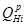
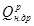
24. Для каждого вида пожара определяются параметры, характеризующие его воздействие на здание и технологическое оборудование, а также площадь пожара.
25. Для локальных пожаров характерно выгорание пожарной нагрузки в пределах участка горения, а также повреждение конструкции перекрытий или покрытий в зоне горения.
Площадь выгорания при свободно развивающемся локальном пожаре принимается при горении твердых сгораемых веществ равной площади участка размещения пожарной нагрузки, при горении горючих и легковоспламеняющихся жидкостей - из расчета растекания из единицы оборудования 1 л на площадь 1 м2 с учетом возможности одновременного загорания соседнего с аварийным оборудования.
26. Возможность разрушения несущих конструкций, а также конструкций перекрытия или покрытия в зоне локального пожара определяется на основе сравнения эквивалентной продолжительности tэкв пожара с пределом огнестойкости конструкций По.к:
tэкв < По.к - конструкция не теряет несущей способности;
tэкв > По.к - конструкция теряет несущую способность.
27. Эквивалентная продолжительность пожара tэкв. характеризует продолжительность стандартного пожара, последствия от воздействия которого эквивалентны воздействию реального пожара на строительную конструкцию.
28. Эквивалентная продолжительность локального пожара определяется по рис. 1, 2, 3 в зависимости от продолжительности локального пожара, которая рассчитывается по формуле
где R - средняя скорость выгорания пожарной нагрузки, кг/м2∙с;
Р - пожарная нагрузка на 1 м2 участка размещения пожарной нагрузки.
Для горизонтальных конструкций Н - высота помещения, для вертикальных - расстояние от оси факела до конструкции.
Рис. 1. Зависимость эквивалентной продолжительности пожара от времени пожара для железобетонных и огнезащищенных металлических конструкций покрытия в условиях локальных пожаров
1 - Н/ 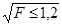
2 - 1,5;
3 - 1,8;
4 - 2,2;
5 - 2,4;
6 - ≥ 3,6;
Н - высота помещения, м; F - площадь помещения, м2
Рис. 2. Зависимость эквивалентной продолжительности пожара от времени пожара для горизонтальных незащищенных металлических конструкций в условиях локальных пожаров
1 - H/ = 1,2;
2 - 1,6;
3 - 2,0;
4 - 2,4;
5 - 2,8;
6 - 3,2;
7 - 3,6;
8 - 4,0;
9 - 4,4;
10 - 4,8;
11 - 5,2;
12 - 5,6;
13 - 6,0
Рис. 3. Зависимость эквивалентной продолжительности пожара от времени пожара для вертикальных металлических конструкций в условиях локальных пожаров
1 - H/ = 0,5;
2 - 0,6;
3 - 0,7;
4 - 0,8;
5 - 1,0;
6 - 1,5;
7 - 2,0
29. Для определения размеров повреждения здания в случае объемного пожара рассчитывается температурный режим и продолжительность пожара в помещении и его воздействие на несущие и ограждающие конструкции.
Возможность обрушения несущих и ограждающих конструкций в условиях объемных пожаров определяется из соотношения п. 26.
30. Продолжительность t и максимальная среднеобъемная температура Ттах объемного пожара, регулируемого нагрузкой (рис. 4) определяются по формулам:
t = 32 - 8,1 Рк3,2 е0,92Рк; (21)
где Т0 - начальная среднеобъемная температура, °С.
Температурный режим описывается зависимостью
где W - коэффициент, характеризующий температурный режим пожара;
Tmax - максимальная среднеобъемная температура, определяемая по формуле (22);
Тст - температура стандартного пожара в момент времени, соответствующий времени достижения Tmax
31. Для пожаров, регулируемых вентиляцией (рис. 5), продолжительность пожара определяется зависимостью
где Рк - пожарная нагрузка, приведенная к древесине, кг/м2;
А - площадь проемов помещений, м2;
h - высота проемов, м2;
At - площадь ограждающих конструкций, м2.
Рис. 4. Температурные режимы ПРН
Рис. 5. Номограмма для определения максимальной среднеобъемной температуры и времени ее достижения при ПРВ
32. Эквивалентная продолжительность объемного пожара для несущих и ограждающих конструкций определяется по зависимостям, приведенным на рис. 6, 7.
33. Для определения предельного значения количества пожарной нагрузки фактический предел огнестойкости для каждой строительной конструкции приравнивается эквивалентной продолжительности пожара.
34. Для условий локального пожара предельное значение количества пожарной нагрузки определяется по формуле
где t - продолжительность локального пожара.
35. Для условий объемного пожара предельное значение количества пожарной нагрузки определяется по формуле
где t - условная продолжительность объемного пожара.
Рис. 6. Зависимость эквивалентной продолжительности пожара для железобетонных плит перекрытия от времени пожара для ПРВ
1 - Пp = 0,3;
2 - 0,27;
3 - 0,24;
4 - 0,21;
5 - 0,18;
6 - 0,15;
7 - 0,12;
8 - 0,09;
9 - 0,06;
10 - 0,03;
при V ≤ 103
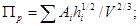
при V > 103
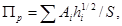
здесь V - объем помещения, м3; Ai - площадь i-го проема, м2; hi - высота i-го проема, м; S - площадь пола помещения, м2
Рис. 7. Зависимость эквивалентной продолжительности пожара для несущих железобетонных стен от времени пожара для ПРВ
1 - Пр = 0,3;
2 - 0,18;
3 - 0,24;
4 - 0,21;
5 - 0,18;
6 - 0,15;
7 - 0,12;
8 - 0,09;
9 - 0,06;
10 - 0,03
ПРИЛОЖЕНИЕ 2
ВЕЛИЧИНА ФУНКЦИОНАЛЬНОЙ ПОЖАРНОЙ НАГРУЗКИ В ЗДАНИЯХ И ПОМЕЩЕНИЯХ
|
Класс функциональной пожарной опасности зданий и помещений |
Назначение здания или помещения |
|
|
1 |
2 |
3 |
|
До 60 |
Ф5.1 |
Производство безалкогольных напитков Производство минеральных вяжущих и кирпича Производство консервов из овощей и фруктов Производство искусственных драгоценных камней |
|
Ф5.3 |
Скотобойня |
|
|
Ф5.2 |
Склады изделий из негорючих материалов без упаковки и в негорючей упаковке |
|
|
61 - 180 |
Ф3.4 |
Поликлиника |
|
Ф2.2 |
Выставка художественных изделий Выставка машин и оборудования |
|
|
Ф5.1 |
Производство сантехнического оборудования Производство алюминия Производство автомобильных кузовов без обивки и сиденьев Производство самолетов (сборочный цех) Производство металлургическое и металлообработки Производство станкостроительное Производство инструментальное Производство ювелирных изделий Производство гончарных и керамических изделий Производство бумаги Производство медикаментов Окраска автомобилей Молочный завод Пивоварение Электролаборатория |
|
|
Ф5.2 |
Гаражи в жилых зданиях |
|
|
181 - 650 |
Ф1 |
Без исключения |
|
Ф2.2 |
Музеи, театры |
|
|
Ф3.2 |
Столовые, рестораны |
|
|
Ф3.1 |
Магазины бытовой техники и радиотоваров Магазины одежды, обуви и игрушек Магазины продовольственные, в том числе винные Магазины мебельные Магазины табачных изделий Магазины канцтоваров Магазины антикварные Магазины универсальные Автосалоны и магазины автозапчастей |
|
|
Ф3.5 |
Почты |
|
|
651 - 900 |
Ф4.1 |
Школы |
|
Ф5.1 |
Киностудии и фотолаборатории Типографии Верфи кораблестроительные Котельные на угле и дровах Мебельные фабрики Механические и ремонтно-сборочные цехи Производство аккумуляторов Производство мягкой игрушки из горючих материалов Производство крепких спиртных напитков Химические лаборатории Производство и ремонт радиотехнических и бытовых электроприборов, электродвигателей и трансформаторов Производство прядильно-ткацкое и по переработке тканей Производство чулочно-вязальное Производство оружия Производство хлебопекарных изделий и шоколада |
|
|
901 - 1100 |
Ф3.1 Ф5.2 |
Аптека со складом медикаментов |
|
Ф5.1 |
Производство деревянной и пластмассовой тары Производство бытовых холодильников |
|
|
Ф5.2 |
Склад изделий из синтетических материалов |
|
|
1100 - 1750 |
Ф3.1 |
Газетный киоск Магазин лаков и красок Магазин электротоваров Магазин книжный |
|
Ф2.1 |
Библиотека |
|
|
Ф5.1 |
Производство клеев Производство макаронных изделий и шоколада Производство деревообрабатывающее |
|
|
Ф5.2 |
Склад лакокрасочных изделий и мастик |
|
|
1751 - 2000 |
Ф5.1 |
Производство деревообрабатывающее Производство резинотехнических изделий Смесеприготовительные отделения окраски и промывки деталей с применением ЛВЖ и ГЖ |
|
Ф5.2 |
Книгохранилища |
|
|
2000 |
Ф5.1 |
Предприятия нефтепереработки Производство горючих и натуральных синтетических волокон и их переработка Производство коноплевок на нитрооснове Станции регенерации с применением горючих газов, бензина, спиртов, эфиров и других ЛВЖ и ГЖ Специализированные отделения красок, лаков и клеев с применением ЛВЖ и ГЖ Окрасочные камеры |
ПРИЛОЖЕНИЕ 3
ПРИМЕРЫ ТЕХНИКО-ЭКОНОМИЧЕСКОГО ОБОСНОВАНИЯ ПРОТИВОПОЖАРНЫХ МЕРОПРИЯТИЙ
Технико-экономическое обоснование противопожарных мероприятий может выполняться на стадии разработки проектной документации зданий и сооружений, для эксплуатируемых или реконструируемых строительных объектов. Приведенные примеры технико-экономического обоснования выполнялись для эксплуатируемых зданий с целью повышения их пожарной безопасности в соответствии с требованиями предстрахового обследования. В приведенных примерах наиболее полно учитывается комплекс характеристик объектов, определяющих опасность возникновения и развития пожара, а также эффективность мероприятий, изменение которых влияет на величину годовых потерь от пожара.
Выполнение технико-экономического обоснования включает изучение проектной документации и натурное обследование архитектурно-строительных элементов здания, его инженерных систем и технологического оборудования, ознакомление с организационно-профилактическими мероприятиями, выполняемыми на объекте. Получаемый перечень характеристик здания должен содержать такие сведения, которые дали бы возможность представить действительное состояние объекта по пожарной безопасности в частях: технологической, архитектурно-планировочной и конструктивной, электрической, сантехнической, пожаротушения и сигнализации, оценить опасность возникновения и развития пожара, условия тушения, размеры и характер возможных повреждений.
При проведении оценки уровня пожарной безопасности выполняется построение сценариев возможных пожаров и расчет вероятностного годового ущерба исходя из состояния объекта и с учетом дополнительных мероприятий пожарной безопасности.
КРАТКАЯ ХАРАКТЕРИСТИКА ОБЪЕКТА
Административно-бытовой корпус представляет собой 4-этажное здание с подвалом размерами в плане 66,4 × 16,39 м, пристроенное к производственному корпусу. Стены здания - кирпичные, перекрытия - обетонированные металлические балки, по которым уложена бетонная плита, чердачное покрытие - деревянные стропила и деревянная обрешетка, обработанные огнезащитным составом, кровля - металлическая. Здание отвечает требованиям II степени огнестойкости.
Административно-бытовой корпус отделен от производственного противопожарной стеной 1-го типа, что отвечает требованиям п. 1.24 СНиП 2.09.04-87*. Площадь административно-бытовой части: 1-го, 2-го, 3-го и 4-го этажей по проекту - по 750 м2.
Планировочное решение здания представляет собой набор административно-бытовых помещений, имеющих выходы в общий коридор, ведущий в лестничные клетки.
Здание имеет две рассредоточенные обычные лестничные клетки 1-го типа, имеющие выходы наружу. Выходы из подвала предусмотрены через общие лестничные клетки. Из лестничной клетки имеется выход на чердак и кровлю.
Объемно-планировочные и конструктивные решения, принятые в проекте, отвечают требованиям СНиП 2.01.02-85* «Противопожарные нормы» и СНиП 2.09.04-87* «Административные и бытовые здания».
Для внутреннего пожаротушения в здании имеется противопожарный водопровод, обеспечивающий расход воды 2,5 л/с, что отвечает требованиям СНиП 2.04.01-85.
Наружное пожаротушение предусматривается от гидрантов городской водопроводной емкости с расходом 20 л/с, что отвечает требованиям СНиП 2.04.02-84.
В соответствии с требованиями СНиП 2.09.04-87* «Административные и бытовые здания» пожароопасные помещения 1-го, 2-го, 3-го и частично 4-го этажей и подвала оборудованы автоматической пожарной сигнализацией, предназначенной для обнаружения пожара с помощью пожарных извещателей и сообщения о месте его возникновения на приемно-контрольное устройство Рубин-3, размещенное в помещении диспетчерской на первом этаже. Осуществление связи с подразделениями пожарной охраны осуществляется с помощью телефонной сети от приемно-контрольного пункта, на котором предусмотрено круглосуточное дежурство.
НАТУРНОЕ ОБСЛЕДОВАНИЕ ОБЪЕКТА
Целью натурного обследования является получение данных об объекте, на основании которых устанавливаются:
■ соответствие объемно-планировочных и конструктивных решений, инженерного оборудования, систем противопожарной защиты проектным решениям;
■ отступления от проекта при выполнении строительных решений;
■ величина функциональной пожарной опасности объекта;
■ качество выполненных противопожарных мероприятий и состояние средств защиты;
■ оценка уровня защищенности объекта с учетом величины прогнозируемого ущерба и обеспечения безопасности людей.
Выполненное в соответствии с методикой натурное обследование позволило сделать следующие заключения по основным характеристикам пожарной опасности объекта.
1. Объемно-планировочные и конструктивные решения
В пространстве между административно-бытовым корпусом и производственным корпусом выполнена встройка, в которой размещены бытовые помещения, в результате чего площадь первого этажа здания увеличена до 1088 м2. Конструкции встройки выполнены с использованием металлических элементов. Встройка размещена таким образом, что помещения находятся за противопожарной стеной, отделяющий административно-бытовой корпус от производственного.
Внесены некоторые изменения в размещение ряда помещений первого этажа. Изменение конструктивных и планировочных решений не меняет степени огнестойкости здания и не является отступлением от требований действующих нормативных документов.
Внешний осмотр бетонных и кирпичных строительных конструкций позволяет сделать вывод об их износе. В некоторых местах отделка и облицовка стен не позволяет определить состояние основной конструкции.
Осмотр конструкций чердака показал, что стропила и обрешетка имеют огнезащитное покрытие, однако местами наблюдается его отслоение от древесины.
2. Система противопожарного водоснабжения
Надзор за исправным состоянием, эксплуатацию и мелкий ремонт осуществляет служба инженера по технике безопасности. Проверка внутренних пожарных кранов и наличие требуемого расхода воды на пожаротушение производится периодически. Внутренние пожарные краны размещены в специальных шкафах на лестничных площадках, имеют необходимый инвентарь и обеспечены свободным доступом.
Наружное пожаротушение предусматривается от пожарных гидрантов городского водопровода, к которым обеспечен свободный доступ и подъезд для пожарных автомобилей.
3. Первичные средства пожаротушения и автоматическая пожарная сигнализация
В соответствии с приказом директора ответственность за техническое состояние первичных и автоматических средств противопожарной защиты возложена на главного инженера комбината. Инструкции по эксплуатации этих систем находятся у главного инженера или в его службах.
Здание оснащено первичными средствами пожаротушения, которые размещены в местах, имеющих свободный доступ, есть указатели о местах их хранения. Пожарные щиты укомплектованы пожарным инвентарем не полностью.
Не обеспечены необходимыми углекислотными огнетушителями помещения ЭВМ и АТС.
Контроль за исправностью первичных средств пожаротушения выполняется в соответствии с инструкцией, прилагаемой заводом-изготовителем, однако в журнале не фиксируется.
Здание оборудовано автоматической пожарной сигнализацией, выполненной в соответствии с проектом. Проектом предусмотрена установка системы сигнализации во всех пожароопасных помещениях подвала, 1-го, 2-го, 3-го и части 4-го этажей. Часть пожароопасных помещений 4-го этажа системой автоматической сигнализации не оборудована.
Состояние системы автоматической сигнализации контролируется согласно инструкции по ее эксплуатации, выполняется осмотр извещателей и очистка их от пыли, проверяется система сигнализации на соответствие сигналов от объектов их обозначению на пульте. Журнал ремонта и периодических испытаний системы пожарной сигнализации не ведется.
Для обслуживания системы автоматической сигнализации имеется необходимый штат обслуживающего персонала, приемная станция не остается безнадзорной. Электропроводка системы автоматической пожарной сигнализации осуществляется по 1-й категории от двух независимых источников переменного тока напряжением 220 В.
4. Противопожарные организационно-технические мероприятия
Ответственные лица за соблюдение противопожарного режима установлены приказом директора комбината по этажам здания и не установлены для каждого помещения.
Для профилактики пожаров и загораний проводится работа, обеспечивающая подготовленность работающих в соблюдении мер противопожарной безопасности. Имеются инструкции, содержащие основные требования по:
■ обеспечению порядка на подъездах к зданию и водоисточникам;
■ содержанию и введению в действие первичных средств пожаротушения, сигнализации, вызова пожарной охраны;
■ размещению мест, где разрешается курение;
■ сбору и удалению сгораемого мусора;
■ порядку эвакуации людей и материальных ценностей;
■ пользованию электронагревательными приборами.
Однако указанными инструкциями не оснащены все помещения.
5. Оценка функциональной пожарной опасности
Функциональная пожарная опасность строительного объекта оценивается вероятностью возникновения пожара и величиной пожарной нагрузки.
Для зданий административно-бытового назначения вероятность возникновения пожара может быть принята на основе статистических данных для данного объекта или для других объектов того же назначения, имеющих аналогичные объемно-планировочные и конструктивные решения.
При наличии данных об эксплуатируемых объектах вероятность возникновения пожара определяется по формуле:
где λ - вероятность возникновения пожара, 1/м2 в год;
Q - количество пожаров, произошедших на объектах наблюдения;
F - общая площадь объектов наблюдения.
Обобщение статистических данных о пожарах показывает, что в здания административно-бытового назначения основными причинами пожаров и загораний являются:
■ курение в неустановленных местах;
■ неосторожное обращение с электронагревательными приборами;
■ неисправности в электропроводке или в электроприборах.
Рассчитанная величина вероятности возникновения пожара для административно-бытового здания составляет 5∙10-6 1/м2 в год.
Количественным показателем, характеризующим длительность и интенсивность возможного пожара, является пожарная нагрузка в МДж/м2. Она может заключаться в начинке зданий и помещений (функциональная) или в строительных конструкциях и их элементах (конструктивная). Пожарную нагрузку составляют вещества и материалы, способные гореть или поддерживать горение. Определение вида, величины и распределения пожарной нагрузки выполняется на основе визуального обследования всех помещений здания. Как показало обследование, пожарная нагрузка в конторских помещениях здания является однородной и состоит из деревянной мебели, бумаги в стопках, рулонах, на стеллажах, оргтехники. В бытовых помещениях находится одежда в металлических шкафчиках, в магазине - товар в горючей упаковке. В подвальном помещении имеются скопление промасленной пакли, отходов древесины и другой горючий мусор. В помещении сауны - деревянные мебель и отделка помещений. На 4-м этаже в коридорах установлены деревянные стеллажные шкафы и деревянные кульманы. Конструктивную пожарную нагрузку составляют стропила и обрешетка чердака, заполнения проемов, отделка стен, полы, электропроводка. В чердачном помещении также имеются доски и столярные предметы.
При определении пожарной нагрузки составляется перечень всех помещений, в которых имеются горючие вещества и материалы, и вычисляется для каждого помещения величина равномерно распределенной пожарной нагрузки по формуле:
где Р - пожарная нагрузка, МДж/ м2;
Нj- - низшая теплота сгорания j-го горючего вещества или материала;
Mj - масса j-го вещества или материала;
S - площадь пола помещения или площадь размещения пожарной нагрузки, м2;
п - число веществ и материалов, составляющих пожарную нагрузку.
В результате обследования административно-бытового корпуса и расчетов по формуле (2) составлена сводная таблица с указанием величины пожарной нагрузки в помещениях.
Таблица 1
|
Наименование помещений |
Пожарная нагрузка, МДж /м2 |
|
|
1 - 8 |
Конторские помещения |
500 - 650 |
|
9 |
Диспетчерская |
450 |
|
10 |
Архив |
1100 |
|
11 |
Медпункт |
900 |
|
12 |
Магазин |
650 |
|
13 |
Столовая |
450 |
|
14 |
Раздевалка |
250 |
|
15 - 18 |
Конторские помещения со стеллажами |
900 |
|
19 |
АТС |
450 |
|
20 |
Библиотека |
1100 |
|
21 |
АСУ |
450 |
|
22 |
МСБ |
350 |
|
23 |
Актовый зал |
400 |
|
24 |
Проектно-конструкторское бюро |
1100 |
|
25 |
Подвал |
250 |
РАСЧЕТ ГОДОВЫХ ПОТЕРЬ ОТ ПОЖАРА
В течение срока эксплуатации строительного объекта с определенной вероятностью на объекте возможны загорания и пожары. Их развитие обусловлено как закономерными, так и случайными факторами и может прогнозироваться с учетом имеющихся сведений о пожарной опасности объекта и средствах, направленных на противопожарную защиту. Часть загораний ликвидируется с помощью первичных средств пожаротушения на небольшой площади. Пожары, которые не потушены первичными средствами из-за их или недостаточной эффективности или позднего обнаружения, развиваются и тушатся при своевременном прибытии подразделений пожарной охраны. Часть пожаров, прибытие на которые по каким-то причинам не оказалось своевременным, развиваются на большие площади и происходят с обрушением строительных конструкций. С учетом вероятности каждого из перечисленных вариантов развития пожара могут быть построены сценарии пожаров и рассчитаны вероятностные годовые потери на объекте.
В соответствии с методикой расчета годовые потери от пожара рассчитывают по формуле
М (П) =М1 (П) + М2 (П) + М3 (П),
где: М1 (П), М2 (П), М3 (П) - математическое ожидание годовых потерь от пожаров, потушенных соответственно первичными средствами пожаротушения, подразделениями пожарной охраны, при отказе средств тушения. Определяем составляющие математического ожидания годовых потерь для административно-бытового корпуса. Математическое ожидание годовых потерь от пожаров, потушенных первичными средствами, составит:
где λ - вероятность возникновения пожара, равная 5 × 10-6∙1/м2 в год, для здания 5 × 10-6 × 4000 м2;
CT - стоимость поврежденного оборудования, тыс. руб/м2;
Fпож - площадь пожара при тушении первичными средствами, для огнетушителей равная 4 м2;
p1 - вероятность тушения первичными средствами, принимая для огнетушителей в зависимости от скорости распространения горения по поверхности по табл. 1 прил. 1 равной 0,79;
к - коэффициент, учитывающий косвенные потери, принятый по статистическим данным равным 0,9.
Таким образом, получаем:
тыс. руб.
Математическое ожидание годовых потерь от пожаров, потушенных подразделениями пожарной охраны, прибывшими по сигналу системы автоматической пожарной сигнализации и начавшим тушение в течение 15 мин, рассчитываем по формуле
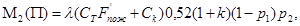
где F¢пож - площадь пожара за время тушения подразделения пожарной охраны, м2;
p2 - вероятность тушения подразделения пожарной охраны, определяемая в зависимости от расхода воды на наружное пожаротушение по табл. 2 прил. 1;
0,52 - коэффициент, учитывающий степень уничтожения основных и оборотных фондов;
Ск - стоимость поврежденных строительных конструкций, тыс. руб.
При своевременном прибытии подразделений пожарной охраны в течение 15 мин принимаем условие, что развитие пожара возможно в пределах одного помещения или между помещениями, разделенными перегородками с пределом огнестойкости не более 0,25 ч. Обрушения основных строительных конструкций в здании II степени огнестойкости не происходит, возможен только переход пожара в смежное помещение. Площадь пожара в этом случае определяется линейной скоростью горения и временем до начала тушения
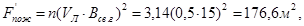
где Vл - линейная скорость распространения пожара, м/мин;
Всв.г - время свободного горения, мин.
Рассчитываем величину годовых потерь
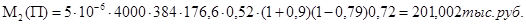
Ожидаемые годовые потери от пожаров, на которых прибытие подразделений пожарной охраны произошло после развития пожара на большой площади, определяются по формуле
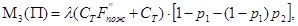
где 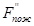
В случаях, когда прибытие подразделений пожарной охраны и начало тушения происходят после развития пожара на большой площади проверяется возможность обрушения строительных конструкций в результате достижения ими предела огнестойкости. Для расчета необходима оценка количественных показателей, характеризующих длительность и интенсивность пожара, поведение строительных конструкций под его воздействием. Для расчетов использована методика, приведенная в прил. 1 настоящей работы.
Возможность разрушения основных строительных конструкций в зоне пожара определяется исходя из сравнения эквивалентной продолжительности пожара tэкв с пределами огнестойкости конструкций П, находящихся под его воздействием.
tэкв < П - конструкция не теряет несущей или ограждающей способности;
tэкв > П - конструкция теряет несущую или ограждающую способность.
Эквивалентная продолжительность пожара tэкв характеризует продолжительность стандартного пожара, последствия воздействия которого эквивалентны воздействию реального пожара на строительные конструкции. Для расчета tэкв необходимо определение вида пожара, его продолжительности.
Для этого составляется карта распределения пожарной нагрузки по помещениям и определяется наихудший вариант развития пожара. Для административно-бытового корпуса пользуемся данными, полученными при натурном обследовании объекта и сведенными в табл. 1.
Исходя из экспертной оценки, учитывая однородность вида горючих веществ и материалов, наихудшим вариантом развития пожара принимаем пожар в одном из помещений 4-го этажа, в котором содержится наибольшее количество пожарной нагрузки - 1100 МДж/м2.
Определяем вид пожара по табл. 4 и п. 23 прил. 1. В помещении возможен объемный пожар, регулируемый вентиляцией.
Рассчитываем продолжительность пожара по формуле
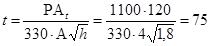
По графику рис. 3 в зависимости от продолжительности пожара и проемности помещения определяем эквивалентную продолжительность пожара для конструкций перекрытия. Она составляет 1,5 ч. Предел огнестойкости перекрытия здания II степени огнестойкости составляет 0,75 ч. Следовательно, tэкв > П и в результате пожара возможно обрушение перекрытия и переход горения с этажа на чердак.
Предполагается, что в течение 30 мин происходит свободное развитие пожара по площади, после чего прибывшие подразделения пожарной охраны локализуют горение, однако еще через 15 мин пожара происходит обрушение перекрытий.
В результате свободного горения в течение 30 мин площадь горения при неблагоприятном сценарии пожара, с учетом перехода горения в смежные помещения и с учетом возможного обрушения конструкций перекрытия через 45 мин и распространения горения по всей площади чердачного этажа составит
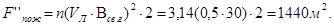
Для описанного варианта развития пожара величина ожидаемых годовых потерь составит
тыс. руб.
Таким образом, математическое ожидание годовых потерь от пожаров на объекте составит:
М (П) = 46,110 + 201,002 + 645,120 = 892,232 тыс. руб.
Полученные результаты расчета приемлемы при условии оборудования всех пожароопасных помещений системой автоматической пожарной сигнализации. В этом случае вероятность сценария пожара с обрушением конструкций перекрытий мала и составляет величину 0,06. Однако в существующем административно-бытовом корпусе часть пожароопасных помещений 4-го этажа сигнализацией не оборудована. При возникновении пожара в одном из этих помещений вероятность сообщения о возникновении пожара в пожарную часть после развития пожара на значительную площадь возрастает. С учетом этого ожидаемые годовые потери от таких пожаров составят
М2(П) = 5∙10-6∙4000 384 1400 (1 - 0,79) 0,72 = 2257,920 тыс. руб.
Общие ожидаемые годовые потери составят
М(П) = 46,110 + 2257,920 = 2304,030 тыс. руб.
ВЫВОДЫ И ПРЕДЛОЖЕНИЯ
Для оценки уровня пожарной опасности используется количественный показатель, характеризующий соотношение величины возможного ущерба и стоимости материальных ценностей
Уп.о. = М(П)/См.ц.,
где Уп.о. - уровень пожарной опасности объекта;
См.ц. - стоимость защищаемых от пожара материальных ценностей.
Рассчитываем значение показателя уровня пожарной опасности для административно-бытового корпуса. Для существующего состояния здания
Уп.о. = 2304,030 / 2303491,000 = 10 коп / 100 руб.
При выполнении на объекте пожарной сигнализации по всем пожароопасным помещениям
Уп.о. = 892,232 / 2303491,000 = 3,8 коп / 100 руб.
Кроме того, на объекте могут быть выполнены и другие мероприятия, повышающие его пожарную безопасность и которые могут быть учтены при определении величины ожидаемых потерь. Например, возможно снижение вероятности возникновения пожаров, повышение надежности системы автоматической пожарной сигнализации и эффективности первичных средств пожаротушения, ограничение возможности быстрого распространения горения.
В связи с этим в административно-бытовом корпусе необходимо выполнить следующие противопожарные мероприятия:
■ оборудовать все пожароопасные помещения 4-го этажа автоматической пожарной сигнализацией;
■ очистить подвальное помещение от горючего мусора;
■ технические работы по обслуживанию системы автоматической пожарной сигнализации выполнять с занесением их описания в журнал;
■ регистрировать ремонты и контроль рабочего состояния автоматической пожарной сигнализации;
■ полностью укомплектовать пожарные щиты инвентарем;
■ оборудовать помещения ЭВМ и АСУ углекислотными огнетушителями;
■ приказом директора назначить ответственных за пожарную безопасность в каждом помещении здания;
■ использовать электроприборы, пригодные для существующей сети,
■ не оставлять приборы работающими без присмотра;
■ при выполнении огнезащиты деревянных чердачных конструкций использовать более эффективное средство - покрытие КСД со сроком действия 4 - 5 лет.
■ выполнить огнезащиту стропил и обрешетки;
■ в чердачном помещении убрать деревянные изделия;
■ провести обучение мерам пожарной безопасности сотрудников комбината.
КРАТКАЯ ХАРАКТЕРИСТИКА ОБЪЕКТА
Производственное здание автотранспортного предприятия предназначено для технического обслуживания и текущего ремонта подвижного состава первой и второй категорий по ВСН 01-89. Категория взрывопожарной и пожарной опасности В по НПБ 105-95. Здание одноэтажное, пристроенное к 4-этажному корпусу административно-бытового назначения. Размеры в плане 184,75 × 57,17 м. Общая площадь составляет 10562 м2. Здание состоит из пяти пролетов, разделенных между собой одноэтажными встройками. Основные несущие строительные конструкции железобетонные и кирпичные, фермы и балки покрытия - металлические. Здание отвечает требованиям II степени огнестойкости.
В пролете, примыкающем к административно-бытовому корпусу, размещен спортивно-оздоровительный комплекс. В производственной части размещены помещения ремонта двигателей, шиномонтажное отделение, окрасочное помещение, кладовая красок и краскоприготовительная, кузовная мастерская, электротехническая мастерская, складские помещения. Пролеты здания разделены встройками, имеющими сквозные проезды без устройства в них ворот.
Стены встроек - кирпичные, балки перекрытий - металлические, плиты - железобетонные.
Объемно-планировочные и конструктивные решения, принятые в проекте, классифицируются по СНиП 2.01.02-85* «Противопожарные нормы» и СНиП 2.09.02-85* «Производственные здания», а также ВСН 01-89 «Предприятия по обслуживанию автомобилей» и должны отвечать противопожарным требованиям этих нормативных документов.
В соответствии с нормативными требованиями в здании предусмотрены следующие противопожарные мероприятия:
- внутренний противопожарный водопровод;
- автоматическая пожарная сигнализация;
- оповещение о пожаре;
- объемно-планировочные и технические решения, обеспечивающие своевременную эвакуацию людей и автотранспорта в случае пожара.
Для внутреннего пожаротушения в здании имеется противопожарный водопровод, обеспечивающий расход воды 2 × 5 л/с, что отвечает требованиям СНиП 2.04.01-85* «Внутренний водопровод и канализация зданий».
Наружное пожаротушение предусматривается от гидрантов городской водопроводной сети с расходом 30 л/с, что отвечает требованиям СНиП 2.04.02-84* «Водоснабжение. Наружные сети и сооружения».
Установками автоматической пожарной сигнализации оборудуются помещения в соответствии с «Перечнем зданий и помещений учреждений и предприятий Минздрава СССР, подлежащих оборудованию средствами автоматической пожарной сигнализации и автоматическими средствами пожаротушения», утвержденным Минтрансом СССР по согласованию с Госстроем СССР и ГУПО МВД СССР и ВСН 01-89 «Предприятия по обслуживанию автомобилей».
Пожароопасные помещения этажей оборудованы автоматической пожарной сигнализацией, предназначенной для обнаружения пожара с помощью пожарных извещателей и сообщения о месте его возникновения на приемно-контрольное устройство, размещенное в помещении проходной по Новорогожской улице. Осуществление связи с подразделениями пожарной охраны предусмотрено с помощью телефонной сети от приемно-контрольного пункта, на котором ведется круглосуточное дежурство.
Проект разработан в соответствии с требованиями СНиП 2.04.09-84 «Пожарная автоматика зданий и сооружений».
НАТУРНОЕ ОБСЛЕДОВАНИЕ ОБЪЕКТА
Выполненное в соответствии с методикой натурное обследование позволило сделать следующее заключение по основным характеристикам пожарной опасности объекта.
Объект эксплуатируется более 50 лет и строительные конструкции имеют значительный износ.
Объемно-планировочные и конструктивные решения выполнены в соответствии с принятыми в проекте. Площадь производственной части составляет 9164 м2. Согласно ВСН 01-89 одноэтажные здания II степени огнестойкости предприятий автотранспорта площадью более 7000 м2 должны быть оборудованы установками автоматического пожаротушения. Встройки между пролетами не могут рассматриваться как противопожарные преграды, так как имеют открытые проезды шириной 6 м, не оборудованные дренчерными завесами и не имеющие противопожарных ворот. Кроме того, в помещениях вставок имеются горючие вещества и материалы.
В ремонтных боксах металлические конструкции не обеспечивают требуемый предел огнестойкости 0,75 ч для встроенных помещений категории В.
Помещения малярного отделения не отделены от основного цеха противопожарной перегородкой.
В цехе имеется скопление автомобильных шин, составляющих повышенную пожарную нагрузку, имеются промасленные материалы.
Для эвакуации автотранспорта предусмотрено двое ворот, в которых имеются калитки для эвакуации людей. Не везде свободны проезды для эвакуации из встроенных помещений.
Объект оснащен внутренним пожарным водопроводом, системой автоматической пожарной сигнализации и системой оповещения о пожаре. Внутренние пожарные краны размещены в специальных шкафах, имеют необходимый инвентарь и обеспечены свободным доступом.
Наружное пожаротушение предусматривается от пожарных гидрантов городского водопровода, к которым обеспечен свободный доступ и подъезд для пожарных автомобилей.
Здание оборудовано первичными средствами пожаротушения, которые размещены в местах, имеющих свободный доступ, есть указатели о местах их хранения. Пожарные щиты укомплектованы пожарным инвентарем.
При обследовании системы автоматической сигнализации было установлено, что она находилась в отключенном состоянии. При включении обнаружено, что система неисправна и подлежит ремонту в ряде помещений. Журнала текущих проверок и ремонта системы сигнализации не имеется.
На объекте организованы два въезда и дороги, обеспечивающие подъезд пожарных автомашин к производственному зданию.
Расстояние до ближайшей пожарной части в пределах 4 километров.
Для профилактики пожаров и загораний проводится работа, обеспечивающая подготовленность работающих в соблюдении мер противопожарной безопасности. У работающих отсутствуют письменные инструкции, содержащие основные требования по:
- обеспечению порядка на подъездах к зданию и водоисточникам;
- содержанию и введению в действие первичных средств пожаротушения, сигнализации, вызова пожарной охраны;
- размещению мест, где разрешается курение;
- сбору и удалению сгораемого мусора;
- порядку эвакуации людей и материальных ценностей;
- правилам производства работ и эксплуатации оборудования.
ОЦЕНКА ФУНКЦИОНАЛЬНОЙ И КОНСТРУКТИВНОЙ ПОЖАРНОЙ ОПАСНОСТИ
Функциональная пожарная опасность строительного объекта определяется вероятностью возникновения пожара и величиной пожарной нагрузки.
Для производственных зданий предприятий автотранспорта вероятность возникновения пожара может быть принята на основе статистических данных для других объектов того же назначения, имеющих аналогичные объемно-планировочные и конструктивные решения
где λ - вероятность возникновения пожара, 1/м2 в год;
Q - количество пожаров, произошедших на объектах наблюдения;
F - общая площадь объектов наблюдения.
Вероятность возникновения пожара принята 3,1 × 10-6 1/в год.
Количественным показателем, характеризующим длительность и интенсивность возможного пожара, является пожарная нагрузка в МДж/м2. Она может заключаться в начинке зданий и помещений (функциональная) или в строительных конструкциях и их элементах (конструктивная). Пожарную нагрузку составляют вещества и материалы, способные гореть или поддерживать горение. Определение вида, величины и распределения пожарной нагрузки выполнялось на основе натурного обследования.
Функциональная пожарная нагрузка в производственных помещениях состоит из горючих материалов и легковоспламеняющихся жидкостей, находящихся в автотранспорте, шин и других резиновых изделий, лаков и красок, электропроводки, баллонов с горючими газами, отходов производства, содержащих пожароопасные материалы.
Конструктивную пожарную нагрузку в зданиях II степени огнестойкости составляют горючие материалы в полах, заполнениях проемов, отделке. Величина конструктивной пожарной нагрузки составляет не более 250 МДж/м2.
Величина равномерно распределенной пожарной нагрузки рассчитывается по формуле
где Р - пожарная нагрузка, МДж/м2;
Hj - низшая теплота сгорания j-го горючего вещества или материала;
Mj - масса j-го вещества или материала;
S - площадь пола помещения или площадь размещения пожарной нагрузки, м2;
п - количество веществ и материалов, составляющих пожарную нагрузку.
На основе данных обследования составлена сводная таблица с указанием величины функциональной пожарной нагрузки в основных помещениях.
Таблица 1
|
Наименование помещений |
Пожарная нагрузка, МДж /м2 |
|
|
1 |
Участки ремонта и техобслуживания машин |
180 - 350 |
|
2 |
Механический участок |
160 |
|
3 |
Металлообработка |
160 |
|
4 |
Складские помещения |
250 |
|
5 |
Склад авторезины |
600 |
|
6 |
Окрасочное отделение |
180 |
|
7 |
Кладовая красок |
500 |
|
8 |
Шиномонтажное отделение |
350 |
РАСЧЕТ ГОДОВЫХ ПОТЕРЬ ОТ ПОЖАРОВ
В течение периода эксплуатации в производственном здании с определенной вероятностью на объекте возможны загорания и пожары. Их развитие обусловлено как закономерными, так и случайными факторами и может прогнозироваться с учетом имеющихся сведений о пожарной опасности объекта и средствах, направленных на противопожарную защиту. Часть загораний ликвидируется с помощью первичных и автоматических средств при их готовности на небольшой площади. Пожары, которые не потушены первичными и автоматическими средствами из-за их отсутствия или недостаточной эффективности или позднего обнаружения, развиваются и тушатся при своевременном прибытии подразделений пожарной охраны. Часть пожаров, прибытие на которые подразделений пожарной охраны по каким-то причинам оказалось несвоевременным, развивается на большие площади и происходит с обрушением строительных конструкций. С учетом вероятности каждого из перечисленных вариантов развития пожара, могут быть построены сценарии пожаров и рассчитаны вероятностные годовые потери на объекте.
Рассмотрим следующие варианты развития пожаров.
1. Существующее состояние объекта: система автоматической пожарной сигнализации находится в нерабочем состоянии, пожар обнаруживается персоналом, используются первичные средства пожаротушения, подразделения пожарной охраны вызываются персоналом с помощью телефонной связи.
2. На объекте выполнены ремонтные работы: система автоматической пожарной сигнализации находится в рабочем состоянии. Используются первичные средства пожаротушения, автоматически подается сигнал на приемный пункт связи с пожарной частью.
3. Проведен капитальный ремонт объекта, смонтирована система автоматического пожаротушения.
В соответствии с методикой расчета, приведенной в прил. 1, годовые потери от пожара рассчитываются по формулам: Для 1-го и 2-го вариантов:
М(П) = М1 (П) + М3 (П) + М4 (П).
Для 3-го варианта:
М (П) = M1 (П) + Мг (П) + М3 (П) + М4 (П),
где М1 (П), М2 (П), М3 (П), М4 (П) - математическое ожидание годовых потерь от пожаров, потушенных соответственно первичными, автоматическими средствами пожаротушения, подразделениями пожарной охраны, при несвоевременном прибытии средств тушения.
Определяем составляющие математического ожидания годовых потерь от пожаров при возникновении пожаров в наиболее пожароопасных помещениях: складе авторезины или кладовой красок.
Математическое ожидание годовых потерь от пожаров, потушенных первичными средствами пожаротушения, составит:
где λ - вероятность возникновения пожара;
СT - стоимость поврежденной части здания, тыс. руб/м2;
Fnож - площадь пожара;
p1 - вероятность тушения первичными средствами, принимаемая для огнетушителей в зависимости от скорости распространения горения по поверхности по табл. 1 прил. 1 равной 0,79;
к - коэффициент, учитывающий косвенные потери, принятый равным 1,63.
Математическое ожидание годовых потерь от пожаров, потушенных установками автоматического пожаротушения, рассчитывается по формуле
М2 (П) = λС Fnoж (1 + к) (1 - р2) р3,
где р3 - вероятность тушения пожара автоматическими системами.
Математическое ожидание годовых потерь от пожаров, потушенных подразделениями пожарной охраны, рассчитываем по формуле:
В 1-м и 2-м вариантах:
М3(П) = λ (Ст Fnож + Ск) 0,52 (1 + к) (1 - р1) р2.
В 3-м варианте:
М3(П) = λ (Ст Fпож + Ск) 0,52 (1 + к) [1 - p1 - (1 - pl) р3] р2,
где Fnoж - площадь пожара за время тушения подразделениями пожарной охраны, м2;
р2 - вероятность тушения подразделениями пожарной охраны, определяемая в зависимости от расхода воды на наружное пожаротушение по табл. 2 прил. 1;
0,52 - коэффициент, учитывающий степень уничтожения основных и оборотных фондов.
Ск - стоимость поврежденных строительных конструкций, тыс. руб.
При своевременном прибытии подразделений пожарной охраны в течение 15 мин принимаем условие, что развитие пожара наблюдается в пределах одного помещения на участке размещения пожарной нагрузки. Площадь пожара в этом случае определяется линейной скоростью распространения горения и временем до начала тушения
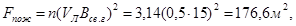
Vл - линейная скорость распространения пожара, м/мин;
Bсв.г - время свободного горения, мин.
Ожидаемые годовые потери от пожаров, на которых прибытие подразделений пожарной охраны произошло после развития пожара на большой площади определяется по формуле:
В 1-м и 2-м вариантах:
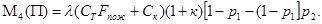
В 3-м варианте:
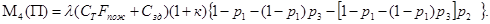
Площадь пожара в этом случае составит:
Fпож = 3,14 (0,5∙30) = 706,6 м2.
В случаях, когда прибытие подразделений пожарной охраны и начало тушения происходят после развития пожара по площади участка проверяется возможность обрушения строительных конструкций в результате достижения ими предела огнестойкости. Для расчета необходима оценка количественных показателей, характеризующих длительность и интенсивность пожара, поведение строительных конструкций под его воздействием.
Возможность разрушения основных строительных конструкций в зоне пожара определяется исходя из сравнения эквивалентной продолжительности пожара tэкв с пределами огнестойкости конструкций По.к, находящихся под его воздействием.
tэкв < По.к - конструкция не теряет несущей или ограждающей способности;
tэкв > По.к - конструкция теряет несущую или ограждающую способность.
Эквивалентная продолжительность пожара tэкв характеризует продолжительность стандартного пожара, последствия воздействия которого эквивалентны воздействию реального пожара на строительные конструкции. Для расчета tэкв необходимо определение вида пожара, его продолжительности. Для этого составляется карта распределения пожарной нагрузки по помещениям и определяется наихудший вариант развития пожара. Для расчета пользуемся данными, сведенными в табл. 1.
Исходя из экспертной оценки наихудшим вариантом развития пожара принимается пожар на участке, в пределах которого содержится наибольшее количество пожарной нагрузки, состоящей из автомобильных шин, - 600 МДж/м2.
Определяем вид пожара по табл. 1 прил. 1. В помещении возможен локальный пожар.
Рассчитываем продолжительность локального пожара по формуле
t = P / v,
где Р - пожарная нагрузка на участке, МДж/м2;
v - скорость выгорания пожарной нагрузки, кг/м2 в сек;
t = 30 / 11,2∙10-3 = 2727 сек = 45 мин.
По графику рис. 2 прил. 1 в зависимости от продолжительности пожара определяем эквивалентную продолжительность пожара для металлических конструкций покрытия. Она составляет 35 мин. Предел огнестойкости металлических ферм составляет 15 мин. Следовательно,
tэкв > Ппокрытия
и в результате пожара возможно обрушение конструкций покрытия.
Рассчитываем ожидаемые годовые потери для различных сценариев развития пожаров.
Для 1-го варианта:
М1 (П) = 3,1 × 10-6 × 9164 × 373,05 × 4 (1 + 1,63) 0,79 = 88,1 тыс. руб. в год;
М2 (П) = 3,1 × 10 × 9164 × 746,09 × 706,5 (1 + 1,63) 0,52 (1 - 0,79) 0,8 = 3440,450 тыс. руб. в год;
М3 (П) = 3,1 × 10 × 9164 × 745,09 × 1425,7 (1 + 1,63) 0,52 × [1 - 0,79 - (1 - 0,79) 0,8] = 1735,681 тыс. руб. в год.
Для 2-го варианта:
М1 (П) = 3,1 × 10-6 × 9164 × 373,05 × 4 (1 + 1,63) 0,79 = 88,1 тыс. руб. в год;
М2 (П) = 3,1 × 10-6 × 9164 × 746,09 × 176,6 (1 + 1,63) 0,52 (1 - 0,79) 0,8 = 859,99 тыс. руб. в год;
М3 (П) = 3,1 × 10-6 × 9164 × 745,09 × 1425,7 (1 + 1,63) 0,52 × [1 - 0,79 - (1 - 0,79) × 0,8] = 1735,681 тыс. руб. в год.
Для 3-го варианта:
М1 (П) = 3,1 × 10-6 × 9164 × 373,05 × 4 (1 + 1,63) 0,79 = 88,1 тыс. руб. в год;
М2 (П) = 3,1 × 10-6 × 9164 × 373,05 × 12 (1 + 1,63) (1 - 0,79) 0,86 = 121,07 тыс. руб. в год;
М3 (П) = 3,1 × 10-6 × 9164 × 746,09 × 176,6 (1 + 1,63) 0,52 × [1 - 0,79 - (1 - 0,79) 0,86] 0,95 = 70,38 тыс. руб. в год;
М4 (П) = 3,1 × 10-6 × 9164 × 746,09 × 1425,7 (1 + 1,63) 0,52 × /1 - 0,79 - (1 - 0,79) 0,86 - {[1 - 0,79 - (1 - 0,79) 0,86] 0,95}/ = 61,99 тыс. руб. в год.
Таким образом, общие ожидаемые годовые потери составят:
- при нарушениях в мерах пожарной безопасности, нерабочем состоянии системы автоматической пожарной сигнализации
М (П) = 88,1 + 3440,450 + 1735,681 = 5264,181 тыс. руб. в год;
- при рабочем состоянии системы автоматической пожарной сигнализации и соблюдении на объекте мер пожарной безопасности
М (П) = 88,1 + 859,99 + 1735,681 = 2683,721 тыс. руб. в год;
- при оборудовании объекта системой автоматического пожаротушения
М (П) = 88,1 + 121,07 + 70,38 + 61,99 = 341,54 тыс. руб. в год.
ВЫВОДЫ И РЕКОМЕНДАЦИИ
Для оценки уровня пожарной опасности используется количественный показатель, характеризующий соотношение величины возможного ущерба и стоимости материальных ценностей
Уп.о = М (П) / См.ц
Уп.о - уровень пожарной опасности объекта;
См.ц - стоимость защищаемых от пожара материальных ценностей.
Рассчитываем значение показателя уровня пожарной опасности для производственного здания.
Для 1-го варианта
Уп.о = 5264,181 / 6 837173,000 = 7,69 коп / 100 руб.
Для 2-го варианта
Уп.о = 2683,721 / 6 837173,000 = 3,92 коп / 100 руб.
Для 3-го варианта
Уп.о = 341,54 / 6 837173,000 = 0,49 коп / 100 руб.
Анализируя полученные результаты натурного обследования и расчетов возможных готовых потерь, для производственного здания автокомбината можно рекомендовать выполнение следующих мероприятий по обеспечению пожарной безопасности:
■ отремонтировать систему автоматической пожарной сигнализации, заключить договор на ее обслуживание со специализированными организациями, вести журнал проверок рабочего состояния и техобслуживания;
■ инструкции по пожарной безопасности доработать и передать во все службы производственного здания;
■ все специальные пожароопасные работы вести после проведения инструктажа и назначения приказом ответственного за пожарную безопасность;
■ упорядочить складирование автомобильных шин;
■ выполнить работы по обеспечению пожарной безопасности в окрасочном отделении и исключению распространения горения за пределы помещений склада краски и окрасочного помещения;
■ металлические балки покрытий встроенных помещений покрыть огнезащитным составом, обеспечивающим предел огнестойкости 0,75 ч;
■ не допускать загромождение проходов, проездов предметами, препятствующими свободному выходу людей и эвакуации техники в случае пожара;
■ следить за тем, чтобы после окончания работы проводилась уборка рабочих мест и помещений от производственных отходов, мусора, промасленной ветоши, отключалась электропроводка. Ежедневно по окончании рабочего дня осматривать помещения перед их закрытием и делать запись в журнале противопожарного осмотра;
■ следить за исправностью оборудования и электроустановок и принимать немедленные меры к устранению обнаруженных неисправностей, которые могут привести к пожару;
■ не допускать курение в зоне ремонта, кроме специально оборудованных мест. Промывку деталей, запчастей и механизмов проводить только с применением соды, не допускать промывки бензином и другими легковоспламеняющимися жидкостями;
■ составить боевой расчет из членов ДПД и работающих на участке, научить их пользоваться средствами пожаротушения, проводить инструктаж на рабочем месте, о чем делать отметку в журнале по технике безопасности;
■ помещение для хранения смазочных веществ и другие складские помещения с пожароопасными материалами обеспечить выходами наружу;
■ вопрос об оборудовании цеха и отдельных помещений системами автоматического пожаротушения в здании с большим сроком эксплуатации без выполнения капитального ремонта всего здания должен решаться на основе технико-экономического обоснования при условии
М (П)¢ - М (П)" > За.п,
где М (П)¢ - приведенный годовой ущерб от пожара в здании, не оборудованном системами автоматического пожаротушения;
М (П)" - приведенный годовой ущерб от пожара в здании, оборудованном системой автоматического пожаротушения;
За.п - приведенные затраты, связанные с оборудованием объекта системой автоматического пожаротушения и определяемые исходя из сметной стоимости проекта автоматического пожаротушения и эксплуатационных затрат.